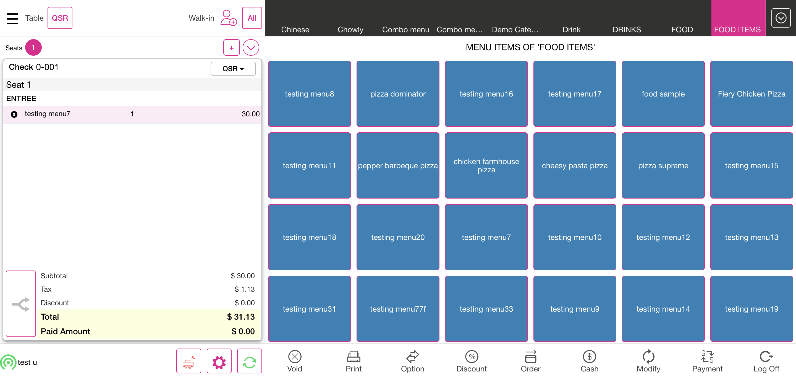

-
TaxRoundOff_Build_5.2(1.5)
19:12:48 PM / 31:14:657 Fail
TaxRoundOff_Build_5.2(1.5)
12.20.2023 19:12:48 12.20.2023 19:14:02 31:14:657 · #test-id=1@TaxRoundOffTypeScriptWebPOSFailCheck tax and RoundOff value for menu item with quantity taxAnd I enter the pin in the pin screenAnd I have closed the order type windowAnd I have selected category arrowAnd Select the category "FOOD ITEMS"And Select the menu item "testing menu7"And Check the amount of menu item "30.00"And Verify if menu price and subtotal are equalAnd Verify if tax is calculated as per the quantity "1"And I have selected category arrowStep skippedAnd Select the category "FOOD ITEMS"Step skippedAnd Select the menu item "testing menu7"Step skippedAnd Verify if tax is calculated as per quantity2 "3"Step skippedAnd I have selected category arrowStep skippedAnd Select the category "FOOD ITEMS"Step skippedAnd Select the menu item "testing menu7"Step skippedAnd Verify if tax is calculated as per the quantity3 "5"Step skippedAnd I have closed the order type windowStep skippedAnd I click log off button in order screenStep skippedcom.qa.stepdef.Hooks.quit(io.cucumber.java.Scenario)FailCheck tax and RoundOff value for menu item with inclusive taxcom.qa.stepdef.Hooks.initialize(io.cucumber.java.Scenario)And I enter the pin in the pin screenStep skippedAnd I have closed the order type windowStep skippedAnd I have selected category arrowStep skippedAnd Select the category "FOOD ITEMS"Step skippedAnd Select the menu item "testing menu8"Step skippedAnd Verify if the tax "12" is calculated correctlyStep skippedAnd Verify if the total is calculated correctlyStep skippedAnd Verify if the balance due is calculated correctlyStep skippedAnd Verify if the balance due is displayed correctly after paymentStep skippedAnd I click log off button in order screenStep skippedcom.qa.stepdef.Hooks.quit(io.cucumber.java.Scenario)FailCheck tax and RoundOff value for menu item with exclusive taxAnd I enter the pin in the pin screenAnd I have closed the order type windowStep skippedAnd I have selected category arrowStep skippedAnd Select the category "FOOD ITEMS"Step skippedAnd Select the menu item "testing menu9"Step skippedAnd Verify if the ExcTax "0.10255" is calculated correctlyStep skippedAnd Verify if the total value is calculated correctlyStep skippedAnd Verify if the balance due value is calculated correctlyStep skippedAnd Verify if the balance due value is displayed correctly after paymentStep skippedAnd I click log off button in order screenStep skippedcom.qa.stepdef.Hooks.quit(io.cucumber.java.Scenario)FailCheck tax and RoundOff value for menu item when item discount is applied (exclusive)And I enter the pin in the pin screenAnd I have closed the order type windowStep skippedAnd I have selected category arrowStep skippedAnd Select the category "FOOD ITEMS"Step skippedAnd Select the menu item "testing menu10"Step skippedAnd I click Discount as "20% Discount"Step skippedAnd I selected cancel buttonStep skippedAnd Verify if tax "0.20" "0.0622" is calculated properly and calculate round-offStep skippedAnd Verify if the total amount is calculated correctlyStep skippedAnd Verify if the balance due amount is calculated correctlyStep skippedAnd Verify if the balance due amount is displayed correctly after paymentStep skippedAnd I click log off button in order screenStep skippedcom.qa.stepdef.Hooks.quit(io.cucumber.java.Scenario)FailCheck tax and RoundOff value for menu item when item discount is applied (inclusive)And I enter the pin in the pin screenAnd I have closed the order type windowStep skippedAnd I have selected category arrowStep skippedAnd Select the category "FOOD ITEMS"Step skippedAnd Select the menu item "testing menu11"Step skippedAnd I click Discount as "30% Discount"Step skippedAnd I selected cancel buttonStep skippedAnd Verify if tax "0.30" "14.77" is calculated correctly and calculate round-offStep skippedAnd Verify if the total amount is displayed correctlyStep skippedAnd Verify if the balance due amount is displayed correctlyStep skippedAnd Verify if the balance due amount is displayed correctly after the paymentStep skippedAnd I click log off button in order screenStep skippedcom.qa.stepdef.Hooks.quit(io.cucumber.java.Scenario)FailCheck RoundOff value for open item (exclusive)And I enter the pin in the pin screenAnd I have closed the order type windowStep skippedAnd Selected Options buttonStep skippedAnd Selected Open item optionStep skippedAnd Selected Coursing name fieldStep skippedAnd I swipe to "DESSERT" Coursing NameStep skippedAnd I entered course nameStep skippedAnd I selected the Price text fieldStep skippedAnd I entered the priceStep skippedAnd I selected the Continue buttonStep skippedAnd I selected the TaxStep skippedAnd I selected the Exclusive TaxStep skippedAnd I click Done button on the open item windowStep skippedAnd Verify if tax and round-off are calculated properly for exclusiveStep skippedAnd Verify if the balance due value is calculated correctlyStep skippedAnd Verify if the balance due value is displayed correctly after paymentStep skippedAnd I click log off button in order screenStep skippedcom.qa.stepdef.Hooks.quit(io.cucumber.java.Scenario)FailCheck RoundOff value for open item (inclusive)And I enter the pin in the pin screenAnd I have closed the order type windowStep skippedAnd Selected Options buttonStep skippedAnd Selected Open item optionStep skippedAnd Selected Coursing name fieldStep skippedAnd I swipe to "BEVERAGE" Coursing NameStep skippedAnd I entered course nameStep skippedAnd I selected the Price text fieldStep skippedAnd I entered the priceStep skippedAnd I selected the Continue buttonStep skippedAnd I selected the TaxStep skippedAnd I selected the Inclusive TaxStep skippedAnd I click Done button on the open item windowStep skippedAnd Verify if tax and round-off are calculated properly for inclusiveStep skippedAnd Verify if the balance due value is calculated correctlyStep skippedAnd Verify if the balance due value is displayed correctly after paymentStep skippedAnd I click log off button in order screenStep skippedcom.qa.stepdef.Hooks.quit(io.cucumber.java.Scenario)FailCheck RoundOff value for menu item (check tax)And I enter the pin in the pin screenAnd I have closed the order type windowStep skippedAnd I have selected category arrowStep skippedAnd Select the category "FOOD ITEMS"Step skippedAnd Select the menu item "testing menu13"Step skippedAnd Verify if the CheckTax is calculated correctly and calculate round-offStep skippedAnd Verify if the total value is calculated correctlyStep skippedAnd Verify if the balance due value is calculated correctlyStep skippedAnd Verify if the balance due value is displayed correctly after paymentStep skippedAnd I click log off button in order screenStep skippedcom.qa.stepdef.Hooks.quit(io.cucumber.java.Scenario)FailCheck RoundOff value for open item (check tax)And I enter the pin in the pin screenAnd I have closed the order type windowStep skippedAnd Selected Options buttonStep skippedAnd Selected Open item optionStep skippedAnd Selected Coursing name fieldStep skippedAnd I swipe to "RETAIL" Coursing Name2Step skippedAnd I entered course nameStep skippedAnd I selected the Price text fieldStep skippedAnd I entered the price for the open itemStep skippedAnd I selected the Continue buttonStep skippedAnd I selected the TaxStep skippedAnd I click Done button on the open item windowStep skippedAnd Verify if the CheckTax is calculated correctly and calculate round-offStep skippedAnd Verify if the balance due value is calculated correctlyStep skippedAnd Verify if the balance due value is displayed correctly after paymentStep skippedAnd I click log off button in order screenStep skippedcom.qa.stepdef.Hooks.quit(io.cucumber.java.Scenario)FailCheck RoundOff value for menu item with both inclusive and exclusive taxAnd I enter the pin in the pin screenAnd I have closed the order type windowStep skippedAnd I have selected category arrowStep skippedAnd Select the category "FOOD ITEMS"Step skippedAnd Select the menu item "testing menu14"Step skippedAnd Verify if both the taxes exc "0.10255" and inc "12.12" are calculated correctly and calculate round-offStep skippedAnd Verify if the total value is calculated correctly for both inclusive and exclusive taxStep skippedAnd Verify if the balance due value is calculated correctlyStep skippedAnd Verify if the balance due value is displayed correctly after paymentStep skippedAnd I click log off button in order screenStep skippedcom.qa.stepdef.Hooks.quit(io.cucumber.java.Scenario)FailCheck RoundOff value for menu item with both inclusive and exclusive tax with discountAnd I enter the pin in the pin screenAnd I have closed the order type windowStep skippedAnd I have selected category arrowStep skippedAnd Select the category "FOOD ITEMS"Step skippedAnd Select the menu item "testing menu14"Step skippedAnd I click Discount as "22% Discount"Step skippedAnd I selected cancel buttonStep skippedAnd Verify if tax is calculated properly and calculated roundOff Inc And ExcStep skippedAnd Verify if the total value is calculated correctly for both inclusive and exclusive tax with discountStep skippedAnd Verify if the balance due amount is displayed correctlyStep skippedAnd Verify if the balance due amount is displayed correctly after the paymentStep skippedAnd I click log off button in order screenStep skippedcom.qa.stepdef.Hooks.quit(io.cucumber.java.Scenario)FailCheck RoundOff value for menu item with exclusive tax with discount amountAnd I enter the pin in the pin screenAnd I have closed the order type windowStep skippedAnd I have selected category arrowStep skippedAnd Select the category "FOOD ITEMS"Step skippedAnd Select the menu item "testing menu10"Step skippedAnd I click Discount as "23$ discount"Step skippedAnd I selected cancel buttonStep skippedAnd Verify if tax "0.0622" is calculated properly and calculate roundOff for amount discount "23.66"Step skippedAnd Verify if the total amount is calculated correctlyStep skippedAnd Verify if the balance due amount is displayed correctlyStep skippedAnd Verify if the balance due amount is displayed correctly after the paymentStep skippedAnd I click log off button in order screenStep skippedcom.qa.stepdef.Hooks.quit(io.cucumber.java.Scenario)FailCheck RoundOff value for menu item with inclusive tax with discount amountAnd I enter the pin in the pin screenAnd I have closed the order type windowStep skippedAnd I have selected category arrowStep skippedAnd Select the category "FOOD ITEMS"Step skippedAnd Select the menu item "testing menu11"Step skippedAnd I click Discount as "32$ discount"Step skippedAnd I selected cancel buttonStep skippedAnd Verify if tax "14.77" is calculated properly and calculate roundOff for amount discount Inclusive "32.33"Step skippedAnd Verify if the balance due amount is displayed correctlyStep skippedAnd Verify if the balance due amount is displayed correctly after the paymentStep skippedAnd I click log off button in order screenStep skippedcom.qa.stepdef.Hooks.quit(io.cucumber.java.Scenario)FailCheck RoundOff value for menu item with exclusive tax with set priceAnd I enter the pin in the pin screenAnd I have closed the order type windowStep skippedAnd I have selected category arrowStep skippedAnd Select the category "FOOD ITEMS"Step skippedAnd Select the menu item "testing menu10"Step skippedAnd I click Discount as "set price discount"Step skippedAnd I selected cancel buttonStep skippedAnd Verify if tax is calculated properly and calculate roundOff for set price discount ExclusiveStep skippedAnd Verify if the balance due amount is displayed correctlyStep skippedAnd Verify if the balance due amount is displayed correctly after the paymentStep skippedAnd I click log off button in order screenStep skippedcom.qa.stepdef.Hooks.quit(io.cucumber.java.Scenario)FailCheck RoundOff value for menu item with inclusive tax with set priceAnd I enter the pin in the pin screenAnd I have closed the order type windowStep skippedAnd I have selected category arrowStep skippedAnd Select the category "FOOD ITEMS"Step skippedAnd Select the menu item "testing menu11"Step skippedAnd I click Discount as "set price discount"Step skippedAnd I selected cancel buttonStep skippedAnd Verify if tax is calculated properly and calculate roundOff for set price discount InclusiveStep skippedAnd Verify if the balance due amount is displayed correctlyStep skippedAnd Verify if the balance due amount is displayed correctly after the paymentStep skippedAnd I click log off button in order screenStep skippedcom.qa.stepdef.Hooks.quit(io.cucumber.java.Scenario)FailCheck RoundOff value for menu item with exclusive tax with check discountAnd I enter the pin in the pin screenAnd I have closed the order type windowStep skippedAnd I have selected category arrowStep skippedAnd Select the category "FOOD ITEMS"Step skippedAnd Select the menu item "pizza supreme"Step skippedAnd Select the menu item "pizza dominator"Step skippedAnd I click Discount as "check discount 24%"Step skippedAnd I selected cancel buttonStep skippedAnd Verify if tax is calculated properly "0.24" "0.10255" "0.0622" and calculate roundOff for check discount exclusiveStep skippedAnd Verify if the balance due amount is displayed correctlyStep skippedAnd Verify if the balance due amount is displayed correctly after the paymentStep skippedAnd I click log off button in order screenStep skippedcom.qa.stepdef.Hooks.quit(io.cucumber.java.Scenario)FailCheck RoundOff value for menu item with inclusive tax with check discountAnd I enter the pin in the pin screenAnd I have closed the order type windowStep skippedAnd I have selected category arrowStep skippedAnd Select the category "FOOD ITEMS"Step skippedAnd Select the menu item "chicken farmhouse pizza"Step skippedAnd Select the menu item "cheesy pasta pizza"Step skippedAnd I click Discount as "check discount 24%"Step skippedAnd I selected cancel buttonStep skippedAnd Verify if tax "0.24" is calculated properly and calculate roundOff for check discount "16.12" inclusiveStep skippedAnd Verify if the balance due amount is displayed correctlyStep skippedAnd Verify if the balance due amount is displayed correctly after the paymentStep skippedAnd I click log off button in order screenStep skippedcom.qa.stepdef.Hooks.quit(io.cucumber.java.Scenario)FailCheck RoundOff value for menu item with exclusive tax with open item discountAnd I enter the pin in the pin screenAnd I have closed the order type windowStep skippedAnd I have selected category arrowStep skippedAnd Select the category "FOOD ITEMS"Step skippedAnd Select the menu item "testing menu15"Step skippedAnd I selected menu optionsStep skippedAnd I selected Open DiscountStep skippedAnd I tapped the percentage fieldStep skippedAnd I entered the discount percentageStep skippedAnd I selected the Continue buttonStep skippedAnd I tapped reason and entered the reasonStep skippedAnd I selected the apply buttonStep skippedAnd Verify If Tax "0.1345" Is Calculated Properly And Calculate RoundOff for Open Discount "0.10255" ExclusiveStep skippedAnd Verify if the total amount is calculated correctly for exclusive open discountStep skippedAnd Verify if the balance due amount is displayed correctlyStep skippedAnd Verify if the balance due amount is displayed correctly after the paymentStep skippedAnd I click log off button in order screenStep skippedcom.qa.stepdef.Hooks.quit(io.cucumber.java.Scenario)FailCheck RoundOff value for menu item with inclusive tax with open item discountAnd I enter the pin in the pin screenAnd I have closed the order type windowStep skippedAnd I have selected category arrowStep skippedAnd Select the category "FOOD ITEMS"Step skippedAnd Select the menu item "testing menu16"Step skippedAnd I selected menu optionsStep skippedAnd I selected Open DiscountStep skippedAnd I tapped the percentage fieldStep skippedAnd I entered the discount percentageStep skippedAnd I selected the Continue buttonStep skippedAnd I tapped reason and entered the reasonStep skippedAnd I selected the apply buttonStep skippedAnd Verify If Tax Is Calculated Properly And Calculate RoundOff for Open Discount InclusiveStep skippedAnd Verify if the balance due amount is displayed correctlyStep skippedAnd Verify if the balance due amount is displayed correctly after the paymentStep skippedAnd I click log off button in order screenStep skippedcom.qa.stepdef.Hooks.quit(io.cucumber.java.Scenario)FailCheck RoundOff value for menu item with exclusive tax with item discount after taxAnd I enter the pin in the pin screenAnd I have closed the order type windowStep skippedAnd I have selected category arrowStep skippedAnd Select the category "FOOD ITEMS"Step skippedAnd Select the menu item "testing menu17"Step skippedAnd I selected quantity as "2"Step skippedAnd I click Discount as "45% Discount"Step skippedAnd I selected cancel buttonStep skippedAnd Verify If Tax "0.10255" and discount "0.4567" Is Calculated Properly And Calculate RoundOff for item discount after tax ExclusiveStep skippedAnd Verify if the balance due amount is displayed correctlyStep skippedAnd Verify if the balance due amount is displayed correctly after the paymentStep skippedAnd I click log off button in order screenStep skippedcom.qa.stepdef.Hooks.quit(io.cucumber.java.Scenario)FailCheck RoundOff value for menu item with inclusive tax with item discount after taxAnd I enter the pin in the pin screenAnd I have closed the order type windowStep skippedAnd I have selected category arrowStep skippedAnd Select the category "FOOD ITEMS"Step skippedAnd Select the menu item "testing menu18"Step skippedAnd I selected quantity as "4"Step skippedAnd I click Discount as "45% Discount"Step skippedAnd I selected cancel buttonStep skippedAnd Verify If Tax "17.62" and discount "0.4567" Is Calculated Properly And Calculate RoundOff for item discount after tax InclusiveStep skippedAnd Verify if the balance due amount is displayed correctlyStep skippedAnd Verify if the balance due amount is displayed correctly after the paymentStep skippedAnd I click log off button in order screenStep skippedcom.qa.stepdef.Hooks.quit(io.cucumber.java.Scenario)FailCheck RoundOff value for menu item with tax on item tax ExclusiveAnd I enter the pin in the pin screenAnd I have closed the order type windowStep skippedAnd I have selected category arrowStep skippedAnd Select the category "FOOD ITEMS"Step skippedAnd Select the menu item "testing menu19"Step skippedAnd Verify If Tax "0.1598" and tax on item tax "0.1367" Is Calculated Properly And Calculate RoundOff for item discount after tax ExclusiveStep skippedAnd Verify if the balance due value is calculated correctlyStep skippedAnd Verify if the balance due value is displayed correctly after paymentStep skippedAnd I click log off button in order screenStep skippedcom.qa.stepdef.Hooks.quit(io.cucumber.java.Scenario)FailCheck RoundOff value for menu item with tax on item tax InclusiveAnd I enter the pin in the pin screenAnd I have closed the order type windowStep skippedAnd I have selected category arrowStep skippedAnd Select the category "FOOD ITEMS"Step skippedAnd Select the menu item "testing menu20"Step skippedAnd Verify If Tax "17.666" and tax on item tax "0.28555" Is Calculated Properly And Calculate RoundOff for item discount after tax InclusiveStep skippedAnd Verify if the balance due value is calculated correctlyStep skippedAnd Verify if the balance due value is displayed correctly after paymentStep skippedAnd I click log off button in order screenStep skippedcom.qa.stepdef.Hooks.quit(io.cucumber.java.Scenario)FailCheck RoundOff value for menu item with exclusive tax and mix and match discountAnd I enter the pin in the pin screenAnd I have closed the order type windowStep skippedAnd I have selected category arrowStep skippedAnd Select the category "IceCreams"Step skippedAnd Select the menu item "testing menu22"Step skippedAnd I click Discount as "Mix ad Match1"Step skippedAnd I selected cancel buttonStep skippedAnd Verify If Tax "0.10255" Is Calculated Properly And Calculate RoundOff for item discount after tax ExclusiveStep skippedAnd Verify if the balance due amount is displayed correctlyStep skippedAnd Verify if the balance due amount is displayed correctly after the paymentStep skippedAnd I click log off button in order screenStep skippedcom.qa.stepdef.Hooks.quit(io.cucumber.java.Scenario)FailCheck RoundOff value for menu item with inclusive tax and mix and match discountAnd I enter the pin in the pin screenAnd I have closed the order type windowStep skippedAnd I have selected category arrowStep skippedAnd Select the category "IceCreams"Step skippedAnd Select the menu item "testing menu23"Step skippedAnd I selected quantity as "2"Step skippedAnd I click Discount as "Mix and Match2"Step skippedAnd I selected cancel buttonStep skippedAnd Verify If Tax "16.12" and discount "13.24" Is Calculated Properly And Calculate RoundOff for item discount before tax InclusiveStep skippedAnd Verify if the balance due amount is displayed correctlyStep skippedAnd Verify if the balance due amount is displayed correctly after the paymentStep skippedAnd I click log off button in order screenStep skippedcom.qa.stepdef.Hooks.quit(io.cucumber.java.Scenario)FailCheck RoundOff value for menu item with exclusive tax, inclusive tax modifier and mix and match discount PercentageAnd I enter the pin in the pin screenAnd I have closed the order type windowStep skippedAnd I have selected category arrowStep skippedAnd Select the category "IceCreams"Step skippedAnd Select the menu item "testing menu24"Step skippedAnd I selected the modifier "Sambar"Step skippedAnd I selected the modifier "Sambar"Step skippedAnd I selected the prefix "Meals"Step skippedAnd I click Discount as "Mix and Match3"Step skippedAnd I selected cancel buttonStep skippedAnd Verify If Exc Tax "0.0622" and inclusive modifier tax "0.13450" are Calculated Properly And Calculate RoundOff for item discount after tax ExclusiveStep skippedAnd Verify if the balance due amount is displayed correctlyStep skippedAnd Verify if the balance due amount is displayed correctly after the paymentStep skippedAnd I click log off button in order screenStep skippedcom.qa.stepdef.Hooks.quit(io.cucumber.java.Scenario)FailCheck RoundOff value for menu item with exclusive tax and free item discountAnd I enter the pin in the pin screenAnd I have closed the order type windowStep skippedAnd I have selected category arrowStep skippedAnd Select the category "PIZZA"Step skippedAnd Select the menu item "PEPPERONI PIZZA"Step skippedAnd I selected the serving size as "MEDIUM"Step skippedAnd I click Discount as "free item disc"Step skippedAnd I selected cancel buttonStep skippedAnd Verify if exclusive tax "0.05623" is calculated properly and calculate roundoffStep skippedAnd Verify if the total value is calculated correctly exc when free item amount is "1"Step skippedAnd Verify if the balance due value is calculated correctlyStep skippedAnd Verify if the balance due value is displayed correctly after paymentStep skippedAnd I click log off button in order screenStep skippedcom.qa.stepdef.Hooks.quit(io.cucumber.java.Scenario)FailCheck RoundOff value for menu item with inclusive tax and free item discountAnd I enter the pin in the pin screenAnd I have closed the order type windowStep skippedAnd I have selected category arrowStep skippedAnd Select the category "PIZZA"Step skippedAnd Select the menu item "Jalapeno Chicken Pizza"Step skippedAnd I selected the serving size as "SMALL" conversationalStep skippedAnd I click Discount as "free item disc"Step skippedAnd I selected cancel buttonStep skippedAnd Verify if inclusive tax "14.14" is calculated properly and calculate roundoffStep skippedAnd Verify if the total value is calculated correctly inc when free item amount is "1"Step skippedAnd Verify if the balance due value is calculated correctlyStep skippedAnd Verify if the balance due value is displayed correctly after paymentStep skippedAnd I click log off button in order screenStep skippedcom.qa.stepdef.Hooks.quit(io.cucumber.java.Scenario)FailCheck RoundOff value for menu item with both exclusive and inclusive tax with free item discountAnd I enter the pin in the pin screenAnd I have closed the order type windowStep skippedAnd I have selected category arrowStep skippedAnd Select the category "PIZZA"Step skippedAnd Select the menu item "Chicken Overload Pizza"Step skippedAnd I click Discount as "free item disc"Step skippedAnd I selected cancel buttonStep skippedAnd Verify if exclusive tax "0.05623" and inclusive tax "14.14" are calculated properly and calculate roundoffStep skippedAnd Verify if the total value is calculated correctly exc "0.05623" and inc when free item amount is "1"Step skippedAnd Verify if the balance due value is calculated correctlyStep skippedAnd Verify if the balance due value is displayed correctly after paymentStep skippedAnd I click log off button in order screenStep skippedcom.qa.stepdef.Hooks.quit(io.cucumber.java.Scenario)FailCheck RoundOff value for menu item with exclusive tax when tax is exemptedAnd I enter the pin in the pin screenAnd I have closed the order type windowStep skippedAnd I have selected category arrowStep skippedAnd Select the category "FOOD ITEMS"Step skippedAnd Select the menu item "testing menu9"Step skippedAnd Verify if the ExcTax "0.10255" is calculated correctlyStep skippedAnd Verify if the total value is calculated correctlyStep skippedAnd Selected Options buttonStep skippedAnd Select tax exempt optionStep skippedAnd I verfiy if the tax amount is exemptedStep skippedAnd Verify if the balance due value is calculated correctly tax exemptStep skippedAnd Verify if the balance due value is displayed correctly after paymentStep skippedAnd I click log off button in order screenStep skippedcom.qa.stepdef.Hooks.quit(io.cucumber.java.Scenario)FailCheck RoundOff value for menu item with inclusive tax when tax is exemptedAnd I enter the pin in the pin screenAnd I have closed the order type windowStep skippedAnd I have selected category arrowStep skippedAnd Select the category "FOOD ITEMS"Step skippedAnd Select the menu item "testing menu8"Step skippedAnd Verify if the tax "12" is calculated correctlyStep skippedAnd Selected Options buttonStep skippedAnd Select tax exempt optionStep skippedAnd I verfiy if the tax amount is exempted inclusiveStep skippedAnd Verify if the balance due value is calculated correctly tax exemptStep skippedAnd Verify if the balance due value is displayed correctly after paymentStep skippedAnd I click log off button in order screenStep skippedcom.qa.stepdef.Hooks.quit(io.cucumber.java.Scenario)FailCheck RoundOff value for menu item with both inclusive and exclusive tax when tax is exemptedAnd I enter the pin in the pin screenAnd I have closed the order type windowStep skippedAnd I have selected category arrowStep skippedAnd Select the category "FOOD ITEMS"Step skippedAnd Select the menu item "testing menu14"Step skippedAnd Verify if both the taxes are calculated correctly and calculate round-offStep skippedAnd Selected Options buttonStep skippedAnd Select tax exempt optionStep skippedAnd I verfiy if the tax amount is exempted both exclusive and inclusiveStep skippedAnd Verify if the balance due value is calculated correctly tax exemptStep skippedAnd Verify if the balance due value is displayed correctly after paymentStep skippedAnd I click log off button in order screenStep skippedcom.qa.stepdef.Hooks.quit(io.cucumber.java.Scenario)FailCheck RoundOff value for menu item after reopening check and adding new menu item ExcAnd I enter the pin in the pin screenAnd I have closed the order type windowStep skippedAnd I get check numberStep skippedAnd I have selected category arrowStep skippedAnd Select the category "FOOD ITEMS"Step skippedAnd Select the menu item "testing menu9"Step skippedAnd Verify if the ExcTax "0.10255" is calculated correctlyStep skippedAnd Verify if the total value is calculated correctlyStep skippedAnd Verify if the balance due value is calculated correctlyStep skippedAnd Verify if the balance due value is displayed correctly after paymentStep skippedAnd Select the All optionStep skippedAnd I click Closed tab on the Check statsStep skippedThen I should see closed check in closed check tabStep skippedAnd I click reopen check button on the check stats screenStep skippedAnd I have selected category arrowStep skippedAnd Select the category "FOOD ITEMS"Step skippedAnd Select the menu item "testing menu9"Step skippedAnd Verify if the ExcTax is calculated correctly Reopen "0.10255"Step skippedAnd Verify If The Total Value Is Calculated Correctly Reopen ExcStep skippedAnd Verify if the balance due value is calculated correctly After Reopen ExcStep skippedAnd Verify if the balance due value is displayed correctly after paymentStep skippedAnd I click log off button in order screenStep skippedcom.qa.stepdef.Hooks.quit(io.cucumber.java.Scenario)FailCheck RoundOff value for menu item after reopening check and adding new menu item IncAnd I enter the pin in the pin screenAnd I have closed the order type windowStep skippedAnd I get check numberStep skippedAnd I have selected category arrowStep skippedAnd Select the category "FOOD ITEMS"Step skippedAnd Select the menu item "testing menu8"Step skippedAnd Verify if the tax "12" is calculated correctlyStep skippedAnd Verify if the total is calculated correctlyStep skippedAnd Verify if the balance due is calculated correctlyStep skippedAnd Verify if the balance due is displayed correctly after paymentStep skippedAnd Select the All optionStep skippedAnd I click Closed tab on the Check statsStep skippedThen I should see closed check in closed check tabStep skippedAnd I click reopen check button on the check stats screenStep skippedAnd I have selected category arrowStep skippedAnd Select the category "FOOD ITEMS"Step skippedAnd Select the menu item "testing menu8"Step skippedAnd Verify if the IncTax is calculated correctly Reopen "12"Step skippedAnd Verify If The Total Value Is Calculated Correctly Reopen IncStep skippedAnd Verify if the balance due value is calculated correctly After Reopen ExcStep skippedAnd Verify if the balance due value is displayed correctly after paymentStep skippedAnd I click log off button in order screenStep skippedcom.qa.stepdef.Hooks.quit(io.cucumber.java.Scenario)FailCheck RoundOff value for menu item after reopening check and submittingAnd I enter the pin in the pin screenAnd I have closed the order type windowStep skippedAnd I get check numberStep skippedAnd I have selected category arrowStep skippedAnd Select the category "FOOD ITEMS"Step skippedAnd Select the menu item "testing menu9"Step skippedAnd Verify if the ExcTax "0.10255" is calculated correctlyStep skippedAnd Verify if the total value is calculated correctlyStep skippedAnd Verify if the balance due value is calculated correctlyStep skippedAnd Verify if the balance due value is displayed correctly after paymentStep skippedAnd Select the All optionStep skippedAnd I click Closed tab on the Check statsStep skippedThen I should see closed check in closed check tabStep skippedAnd I click reopen check button on the check stats screenStep skippedAnd I Selected payment buttonStep skippedAnd I click log off button in order screenStep skippedcom.qa.stepdef.Hooks.quit(io.cucumber.java.Scenario)FailCheck RoundOff value for menu item after reopening check and voidingAnd I enter the pin in the pin screenAnd I have closed the order type windowStep skippedAnd I get check numberStep skippedAnd I have selected category arrowStep skippedAnd Select the category "FOOD ITEMS"Step skippedAnd Select the menu item "testing menu8"Step skippedAnd Verify if the tax "12" is calculated correctlyStep skippedAnd Verify if the total is calculated correctlyStep skippedAnd Verify if the balance due is calculated correctlyStep skippedAnd Verify if the balance due is displayed correctly after paymentStep skippedAnd Select the All optionStep skippedAnd I click Closed tab on the Check statsStep skippedThen I should see closed check in closed check tabStep skippedAnd I click reopen check button on the check stats screenStep skippedAnd I deleted the paymentStep skippedAnd I selected void buttonStep skippedAnd Select the Void reason as "Server Error"Step skippedAnd I click log off button in order screenStep skippedcom.qa.stepdef.Hooks.quit(io.cucumber.java.Scenario)FailCheck tax and RoundOff value for menu item with quantity tax along with rounding offAnd I enter the pin in the pin screenAnd I have closed the order type windowStep skippedAnd I have selected category arrowStep skippedAnd Select the category "chicken"Step skippedAnd Select the sub category "dry chicken"Step skippedAnd Select the menu item "Chilli Chicken Dry"Step skippedAnd Verify if tax is calculated as per the quantity "1" and tax "0.04567"Step skippedAnd I have selected category arrowStep skippedAnd Select the category "chicken"Step skippedAnd Select the sub category "dry chicken"Step skippedAnd Select the menu item "Chilli Chicken Dry"Step skippedAnd I selected quantity as "3"Step skippedAnd Verify if tax is calculated as per the quantity "3" and tax "0.06789"Step skippedAnd I have selected category arrowStep skippedAnd Select the category "chicken"Step skippedAnd Select the sub category "dry chicken"Step skippedAnd Select the menu item "Chilli Chicken Dry"Step skippedAnd I selected quantity as "5"Step skippedAnd Verify if tax is calculated as per the quantity "5" and tax "0.08901"Step skippedAnd I click log off button in order screenStep skippedcom.qa.stepdef.Hooks.quit(io.cucumber.java.Scenario)FailVerify tax and round off for exclusive menu item and inclusive tax modifierAnd I enter the pin in the pin screenAnd I have closed the order type windowStep skippedAnd I have selected category arrowStep skippedAnd Select the category "IceCreams"Step skippedAnd Select the menu item "testing menu24"Step skippedAnd I selected the modifier "Sambar"Step skippedAnd I selected the modifier "Sambar"Step skippedAnd I selected the prefix "Meals"Step skippedAnd I click Discount as "Mix and Match3"Step skippedAnd I selected cancel buttonStep skippedAnd Verify If Exc Tax "0.0622" and inclusive modifier tax "0.13450" are Calculated Properly And Calculate RoundOff for item discount after tax ExclusiveStep skippedAnd Verify if the balance due amount is displayed correctlyStep skippedAnd Verify if the balance due amount is displayed correctly after the paymentStep skippedAnd I click log off button in order screenStep skippedcom.qa.stepdef.Hooks.quit(io.cucumber.java.Scenario)FailVerify tax and round off after reopening check and deleting discountAnd I enter the pin in the pin screenAnd I have closed the order type windowStep skippedAnd I get check numberStep skippedAnd I have selected category arrowStep skippedAnd Select the category "FOOD ITEMS"Step skippedAnd Select the menu item "testing menu10"Step skippedAnd I click Discount as "20% Discount"Step skippedAnd I selected cancel buttonStep skippedAnd Verify if tax "0.20" "0.0622" is calculated properly and calculate round-offStep skippedAnd Verify if the total amount is calculated correctlyStep skippedAnd Verify if the balance due amount is calculated correctlyStep skippedAnd Verify if the balance due amount is displayed correctly after paymentStep skippedAnd Select the All optionStep skippedAnd I click Closed tab on the Check statsStep skippedThen I should see closed check in closed check tabStep skippedAnd I click reopen check button on the check stats screenStep skippedAnd Remove the item discount "20% Discount"Step skippedAnd Verify if tax "0.0622" is calculated properly after removing discount and calculate round-offStep skippedAnd Verify if the total value is calculated correctlyStep skippedAnd Verify if the balance due value is calculated correctly after removing discountStep skippedAnd Verify if the balance due value is displayed correctly after paymentStep skippedAnd I click log off button in order screenStep skippedcom.qa.stepdef.Hooks.quit(io.cucumber.java.Scenario)FailVerify tax and round off after reopening check and deleting discount inclusiveAnd I enter the pin in the pin screenAnd I have closed the order type windowStep skippedAnd I get check numberStep skippedAnd I have selected category arrowStep skippedAnd Select the category "FOOD ITEMS"Step skippedAnd Select the menu item "testing menu11"Step skippedAnd I click Discount as "30% Discount"Step skippedAnd I selected cancel buttonStep skippedAnd Verify if tax "0.30" "14.77" is calculated correctly and calculate round-offStep skippedAnd Verify if the total amount is displayed correctlyStep skippedAnd Verify if the balance due amount is displayed correctlyStep skippedAnd Verify if the balance due amount is displayed correctly after the paymentStep skippedAnd Select the All optionStep skippedAnd I click Check Stats tabStep skippedAnd I click Closed tab on the Check statsStep skippedThen I should see closed check in closed check tabStep skippedAnd I click reopen check button on the check stats screenStep skippedAnd Remove the item discount "30% Discount"Step skippedAnd I selected cancel buttonStep skippedAnd Verify if inclusive tax "14.77" is calculated properly and calculate roundoffStep skippedAnd Verify if the total amount is displayed correctlyStep skippedAnd Verify if the balance due amount is displayed correctlyStep skippedAnd Verify if the balance due amount is displayed correctly after the paymentStep skippedAnd I click log off button in order screenStep skippedcom.qa.stepdef.Hooks.quit(io.cucumber.java.Scenario)FailVerify tax and round off for exclusive menu item and alternate modifierAnd I enter the pin in the pin screenAnd I have closed the order type windowStep skippedAnd I get check numberStep skippedAnd I have selected category arrowStep skippedAnd Select the category "IceCreams"Step skippedAnd Select the menu item "testing menu25"Step skippedAnd I selected the modifier "CHEESE"Step skippedAnd I selected Alternate modifier buttonStep skippedAnd I selected the alternate modifier "Avocado"Step skippedAnd I selected OK buttonStep skippedAnd Verify if the ExcTax "0.10255" is calculated correctlyStep skippedAnd Verify if the total value is calculated correctlyStep skippedAnd Verify if the balance due value is calculated correctlyStep skippedAnd Verify if the balance due value is displayed correctly after paymentStep skippedAnd I click log off button in order screenStep skippedcom.qa.stepdef.Hooks.quit(io.cucumber.java.Scenario)FailVerify tax and round off for exclusive menu item and alternate modifier (with prefix)And I enter the pin in the pin screenAnd I have closed the order type windowStep skippedAnd I get check numberStep skippedAnd I have selected category arrowStep skippedAnd Select the category "IceCreams"Step skippedAnd Select the menu item "testing menu26"Step skippedAnd I selected the modifier "Brinjal"Step skippedAnd I selected Alternate modifier buttonStep skippedAnd I selected the alternate modifier "CHEESE"Step skippedAnd I selected the Prefix "double"Step skippedAnd I selected OK buttonStep skippedAnd Verify If Exc Tax "0.10255" and inclusive modifier tax "0.08655" are Calculated Properly And Calculate RoundOff for item discount after tax ExclusiveStep skippedAnd Verify if the balance due value is calculated correctlyStep skippedAnd Verify if the balance due value is displayed correctly after paymentStep skippedAnd I click log off button in order screenStep skippedcom.qa.stepdef.Hooks.quit(io.cucumber.java.Scenario)FailVerify tax and round off for inclusive menu item and alternate modifier (with prefix)And I enter the pin in the pin screenAnd I have closed the order type windowStep skippedAnd I get check numberStep skippedAnd I have selected category arrowStep skippedAnd Select the category "chicken"Step skippedAnd Select the sub category "gravies"Step skippedAnd Select the menu item "pepper chicken"Step skippedAnd I selected the modifier "half"Step skippedAnd I selected Alternate modifier buttonStep skippedAnd I selected the alternate modifier "sprinkled cheese"Step skippedAnd I selected the Prefix "Extra"Step skippedAnd I selected OK buttonStep skippedAnd Verify If Inc Tax "0.1612" and exclusive modifier tax "0.10255" are Calculated Properly And Calculate RoundOff for item discount after tax ExclusiveStep skippedAnd Verify if the balance due value is calculated correctlyStep skippedAnd Verify if the balance due value is displayed correctly after paymentStep skippedAnd I click log off button in order screenStep skippedcom.qa.stepdef.Hooks.quit(io.cucumber.java.Scenario)FailVerify tax and round off for exclusive menu item after doing split by seatAnd I enter the pin in the pin screenAnd I have closed the order type windowStep skippedAnd I get check numberStep skippedAnd I have selected category arrowStep skippedAnd Select the category "chicken"Step skippedAnd Select the sub category "Rolls"Step skippedAnd Select the menu item "chicken roll"Step skippedAnd Verify if exclusive tax "0.06220" is calculated properly and calculate roundoffStep skippedAnd I have selected category arrowStep skippedAnd Select the category "DRINKS"Step skippedAnd Select the menu item "blue lagoon"Step skippedAnd Verify if exclusive taxes "0.06220" and "0.10255" are calculated properly and calculate roundoffStep skippedAnd I selected order buttonStep skippedAnd User click QSR on Menu Item page in split screenStep skippedAnd User select DineIn mode in split screenStep skippedAnd I selected the tableStep skippedAnd I selected the split buttonStep skippedAnd I selected the split option as Split CheckStep skippedAnd Verify if exclusive taxes "0.10255" and "0.06220" are calculated properly in split screenStep skippedAnd I selected Add buttonStep skippedAnd I selected the menu1Step skippedAnd I transferred the menu to new checkStep skippedAnd I check if exc tax "0.06220" is calculated properly for first checkStep skippedAnd I check if exc tax "0.10255" is calculated properly for second checkStep skippedAnd I select Print buttonStep skippedAnd I get check1 numberStep skippedAnd I get check2 numberStep skippedThen User click save and close in split screenStep skippedAnd I check if exc tax "0.06220" is calculated properly in menu screen after splitStep skippedThen User click finish button in split screenStep skippedAnd I click Check Stats tabStep skippedAnd I click Active tab on the Check statsStep skippedThen I should see active check2 in active check tabStep skippedAnd I click open check button on the check stats screenStep skippedAnd I check if exc tax "0.10255" is calculated properly in menu screen after splitStep skippedAnd Verify if the balance due value is calculated correctlyStep skippedAnd Verify if the balance due value is displayed correctly after payment split mergeStep skippedAnd I click log off button in order screenStep skippedcom.qa.stepdef.Hooks.quit(io.cucumber.java.Scenario)FailVerify tax and round off for inclusive menu item after doing split by seatAnd I enter the pin in the pin screenAnd I have closed the order type windowStep skippedAnd I get check numberStep skippedAnd I have selected category arrowStep skippedAnd Select the category "chicken"Step skippedAnd Select the sub category "Rolls"Step skippedAnd Select the menu item "Mutton roll"Step skippedAnd Verify if inclusive tax "8.789" is calculated properly and calculate roundoffStep skippedAnd I have selected category arrowStep skippedAnd Select the category "DRINKS"Step skippedAnd Select the menu item "Mint Lime"Step skippedAnd Verify if inclusive taxes "13.789" and "8.789" are calculated properly and calculate roundoffStep skippedAnd I selected order buttonStep skippedAnd User click QSR on Menu Item page in split screenStep skippedAnd User select DineIn mode in split screenStep skippedAnd I selected the tableStep skippedAnd I selected the split buttonStep skippedAnd I selected the split option as Split CheckStep skippedAnd Verify if inclusive taxes "8.789" and "13.789" are calculated properly and calculate roundoffStep skippedAnd I selected Add buttonStep skippedAnd I selected the menu1Step skippedAnd I transferred the menu to new checkStep skippedAnd I check if inc tax "8.789" is calculated properly for first checkStep skippedAnd I check if inc tax "13.789" is calculated properly for second checkStep skippedAnd I select Print buttonStep skippedAnd I get check1 numberStep skippedAnd I get check2 numberStep skippedThen User click save and close in split screenStep skippedAnd I check if inc tax "8.789" is calculated properly in menu screen after splitStep skippedThen User click finish button in split screenStep skippedAnd I click Check Stats tabStep skippedAnd I click Active tab on the Check statsStep skippedThen I should see active check2 in active check tabStep skippedAnd I click open check button on the check stats screenStep skippedAnd I check if inc tax "13.789" is calculated properly in menu screen after splitStep skippedAnd Verify if the balance due value is calculated correctlyStep skippedAnd Verify if the balance due value is displayed correctly after payment split mergeStep skippedAnd I click log off button in order screenStep skippedcom.qa.stepdef.Hooks.quit(io.cucumber.java.Scenario)FailCheck tax and RoundOff value for menu item with inclusive tax 2And I enter the pin in the pin screenAnd I have closed the order type windowStep skippedAnd I have selected category arrowStep skippedAnd Select the category "FOOD ITEMS"Step skippedAnd Select the menu item "testing menu31"Step skippedAnd Verify if the tax is calculated correctly "8.789" and "13.789" inclusiveStep skippedAnd Verify if the total is calculated correctlyStep skippedAnd Verify if the balance due is calculated correctlyStep skippedAnd Verify if the balance due is displayed correctly after paymentStep skippedAnd I click log off button in order screenStep skippedcom.qa.stepdef.Hooks.quit(io.cucumber.java.Scenario)FailCheck tax and RoundOff value after adding multiple menu items with exclusive tax and voiding one menu itemAnd I enter the pin in the pin screenAnd I have closed the order type windowStep skippedAnd I get check numberStep skippedAnd I have selected category arrowStep skippedAnd Select the category "FOOD ITEMS"Step skippedAnd Select the menu item "testing menu10"Step skippedAnd I have selected category arrowStep skippedAnd Select the category "FOOD ITEMS"Step skippedAnd Select the menu item "testing menu10"Step skippedAnd Verify if exclusive tax "0.0622" and "0.0622" are calculated properly and calculate roundoffStep skippedAnd I selected order buttonStep skippedAnd I selected menu optionsStep skippedAnd I selected void button in menu optionsStep skippedAnd Select the Void item reason as "Server Error"Step skippedAnd Verify if exclusive tax "0.0622" is calculated properly and calculate roundoffStep skippedAnd Verify if the total value is calculated correctlyStep skippedAnd Verify if the balance due value is calculated correctlyStep skippedAnd Verify if the balance due value is displayed correctly after paymentStep skippedAnd I click log off button in order screenStep skippedcom.qa.stepdef.Hooks.quit(io.cucumber.java.Scenario)FailCheck tax and RoundOff value after adding multiple menu items with inclusive tax and voiding one menu itemAnd I enter the pin in the pin screenAnd I have closed the order type windowStep skippedAnd I get check numberStep skippedAnd I have selected category arrowStep skippedAnd Select the category "FOOD ITEMS"Step skippedAnd Select the menu item "testing menu8"Step skippedAnd I have selected category arrowStep skippedAnd Select the category "FOOD ITEMS"Step skippedAnd Select the menu item "testing menu8"Step skippedAnd Verify if inclusive tax "12" and "12" are calculated properly and calculate roundoffStep skippedAnd I selected order buttonStep skippedAnd I selected menu optionsStep skippedAnd I selected void button in menu optionsStep skippedAnd Select the Void item reason as "Server Error"Step skippedAnd Verify if inclusive tax "12" is calculated properly and calculate roundoffStep skippedAnd Verify if the total is calculated correctlyStep skippedAnd Verify if the balance due is calculated correctlyStep skippedAnd Verify if the balance due is displayed correctly after paymentStep skippedAnd I click log off button in order screenStep skippedcom.qa.stepdef.Hooks.quit(io.cucumber.java.Scenario)FailVerify tax and round off for exclusive menu item after doing merge seatsAnd I enter the pin in the pin screenAnd I have closed the order type windowStep skippedAnd Select the All optionStep skippedAnd Select table layout optionStep skippedAnd I selected new check buttonStep skippedAnd I selected the table1Step skippedAnd I selected seat numberStep skippedAnd I get check numberStep skippedAnd I get table numberStep skippedAnd I have selected category arrowStep skippedAnd Select the category "chicken"Step skippedAnd Select the sub category "Shawarma"Step skippedAnd Select the menu item "cheesy shawarma"Step skippedAnd Verify if exclusive tax "0.23765" is calculated properly and calculate roundoffStep skippedThen User click finish button in split screenStep skippedAnd I selected new check buttonStep skippedAnd I selected the table2Step skippedAnd I selected seat numberStep skippedAnd I get table number2Step skippedAnd I get check number2Step skippedAnd I have selected category arrowStep skippedAnd Select the category "FOOD"Step skippedAnd Select the menu item "double patty burger"Step skippedAnd Verify if exclusive tax "0.10255" is calculated properly and calculate roundoffStep skippedThen User click finish button in split screenStep skippedAnd I now merge the check1Step skippedAnd I now merge the check2Step skippedAnd I click Done button on the open item windowStep skippedAnd I click Done button on the open item window second timeStep skippedAnd I selected the table with merged checksStep skippedAnd Verify if exclusive taxes "0.23765" and "0.10255" are calculated properly and calculate roundoffStep skippedAnd Verify if the balance due value is calculated correctlyStep skippedAnd Verify if the balance due value is displayed correctly after payment split mergeStep skippedAnd I click log off button in order screenStep skippedcom.qa.stepdef.Hooks.quit(io.cucumber.java.Scenario)FailVerify tax and round off for exclusive menu item after doing merge seats applying check discountAnd I enter the pin in the pin screenAnd I have closed the order type windowStep skippedAnd Select the All optionStep skippedAnd Select table layout optionStep skippedAnd I selected new check buttonStep skippedAnd I selected the table1Step skippedAnd I selected seat numberStep skippedAnd I get check numberStep skippedAnd I get table numberStep skippedAnd I have selected category arrowStep skippedAnd Select the category "Arab Biriyani"Step skippedAnd Select the menu item "testing menu32"Step skippedAnd I click Discount as "check 20"Step skippedAnd I selected cancel buttonStep skippedAnd Verify if tax is calculated properly and calculate roundOff for check discount "0.20" exclusive "0.10255"Step skippedThen User click finish button in split screenStep skippedAnd I selected new check buttonStep skippedAnd I selected the table2Step skippedAnd I selected seat numberStep skippedAnd I get table number2Step skippedAnd I get check number2Step skippedAnd I have selected category arrowStep skippedAnd Select the category "Arab Biriyani"Step skippedAnd Select the menu item "testing menu32"Step skippedAnd I click Discount as "check 20"Step skippedAnd I selected cancel buttonStep skippedAnd Verify if tax is calculated properly and calculate roundOff for check discount "0.20" exclusive "0.10255"Step skippedThen User click finish button in split screenStep skippedAnd I now merge the check1 with discountStep skippedAnd I now merge the check2 with discountStep skippedAnd I click Done button on the open item windowStep skippedAnd I click Confirm buttonStep skippedAnd I click Done button on the open item window second timeStep skippedAnd I selected the table with merged checksStep skippedAnd Verify if tax is calculated properly and calculate roundOff for check discount "0.20" exclusive "0.10255" and "0.10255"Step skippedAnd Verify if the balance due amount is displayed correctlyStep skippedAnd Verify if the balance due value is displayed correctly after payment split mergeStep skippedAnd I click log off button in order screenStep skippedcom.qa.stepdef.Hooks.quit(io.cucumber.java.Scenario)FailVerify tax and round off for exclusive and check tax menu item after doing merge seatsAnd I enter the pin in the pin screenAnd I have closed the order type windowStep skippedAnd Select the All optionStep skippedAnd Select table layout optionStep skippedAnd I selected new check buttonStep skippedAnd I selected the table1Step skippedAnd I selected seat numberStep skippedAnd I get check numberStep skippedAnd I get table numberStep skippedAnd I have selected category arrowStep skippedAnd Select the category "FOOD ITEMS"Step skippedAnd Select the menu item "testing menu13"Step skippedAnd Verify if the CheckTax "0.12444" is calculated correctly and calculate round-offStep skippedThen User click finish button in split screenStep skippedAnd I selected new check buttonStep skippedAnd I selected the table2Step skippedAnd I selected seat numberStep skippedAnd I get table number2Step skippedAnd I get check number2Step skippedAnd I have selected category arrowStep skippedAnd Select the category "FOOD ITEMS"Step skippedAnd Select the menu item "testing menu13"Step skippedAnd Verify if the CheckTax "0.12444" is calculated correctly and calculate round-offStep skippedThen User click finish button in split screenStep skippedAnd I now merge the check1Step skippedAnd I now merge the check2Step skippedAnd I click Done button on the open item windowStep skippedAnd I click Done button on the open item window second timeStep skippedAnd I selected the table with merged checksStep skippedAnd Verify if the CheckTax "0.12444" is calculated correctly and calculate round-off multiple menuStep skippedAnd Verify if the balance due value is calculated correctlyStep skippedAnd Verify if the balance due value is displayed correctly after payment split mergeStep skippedAnd I click log off button in order screenStep skippedcom.qa.stepdef.Hooks.quit(io.cucumber.java.Scenario)FailVerify tax and round off for exclusive menu item applying 100% discountAnd I enter the pin in the pin screenAnd I have closed the order type windowStep skippedAnd I get check numberStep skippedAnd I have selected category arrowStep skippedAnd Select the category "FOOD ITEMS"Step skippedAnd Select the menu item "testing menu9"Step skippedAnd I click Discount as "100% disc"Step skippedAnd I selected cancel buttonStep skippedAnd Verify if the tax is calculated correctly after 100% discountStep skippedAnd Verify if the total is calculated correctly after 100% discountStep skippedAnd Verify if the balance due value is calculated correctly after 100% discountStep skippedAnd I click log off button in order screenStep skippedcom.qa.stepdef.Hooks.quit(io.cucumber.java.Scenario)FailVerify tax and round off for inclusive menu item applying 100% discountAnd I enter the pin in the pin screenAnd I have closed the order type windowStep skippedAnd I get check numberStep skippedAnd I have selected category arrowStep skippedAnd Select the category "FOOD ITEMS"Step skippedAnd Select the menu item "testing menu8"Step skippedAnd I click Discount as "100% disc"Step skippedAnd I selected cancel buttonStep skippedAnd Verify if the tax is calculated correctly after 100% discountStep skippedAnd Verify if the total is calculated correctly after 100% discountStep skippedAnd Verify if the balance due value is calculated correctly after 100% discountStep skippedAnd I click log off button in order screenStep skippedcom.qa.stepdef.Hooks.quit(io.cucumber.java.Scenario)FailVerify tax and round off for both exclusive and inclusive tax menu item applying 100% discountAnd I enter the pin in the pin screenAnd I have closed the order type windowStep skippedAnd I get check numberStep skippedAnd I have selected category arrowStep skippedAnd Select the category "FOOD ITEMS"Step skippedAnd Select the menu item "testing menu14"Step skippedAnd I click Discount as "100% disc"Step skippedAnd I selected cancel buttonStep skippedAnd Verify if the tax is calculated correctly after 100% discountStep skippedAnd Verify if the total is calculated correctly after 100% discountStep skippedAnd Verify if the balance due value is calculated correctly after 100% discountStep skippedAnd I click log off button in order screenStep skippedcom.qa.stepdef.Hooks.quit(io.cucumber.java.Scenario)FailVerify tax and roundoff after doing repeat order inclusiveAnd I enter the pin in the pin screenAnd I have closed the order type windowStep skippedAnd I have selected category arrowStep skippedAnd Select the category "FOOD ITEMS"Step skippedAnd Select the menu item "testing menu8"Step skippedAnd I selected menu optionsStep skippedAnd I selected repeat orderStep skippedAnd Verify if the IncTax is calculated correctly Reopen "12"Step skippedAnd Verify If The Total Value Is Calculated Correctly Reopen IncStep skippedAnd Verify if the balance due is calculated correctlyStep skippedAnd Verify if the balance due is displayed correctly after paymentStep skippedAnd I click log off button in order screenStep skippedcom.qa.stepdef.Hooks.quit(io.cucumber.java.Scenario)FailVerify tax and roundoff after doing repeat order exclusiveAnd I enter the pin in the pin screenAnd I have closed the order type windowStep skippedAnd I have selected category arrowStep skippedAnd Select the category "FOOD ITEMS"Step skippedAnd Select the menu item "testing menu9"Step skippedAnd I selected menu optionsStep skippedAnd I selected repeat orderStep skippedAnd Verify if the ExcTax is calculated correctly Reopen "0.10255"Step skippedAnd Verify If The Total Value Is Calculated Correctly Reopen ExcStep skippedAnd Verify if the balance due is calculated correctlyStep skippedAnd Verify if the balance due is displayed correctly after paymentStep skippedAnd I click log off button in order screenStep skippedcom.qa.stepdef.Hooks.quit(io.cucumber.java.Scenario)FailVerify tax and roundoff after placing menu items with check discount and reopen to void some menu itemsAnd I enter the pin in the pin screenAnd I have closed the order type windowStep skippedAnd I get check numberStep skippedAnd I have selected category arrowStep skippedAnd Select the category "FOOD ITEMS"Step skippedAnd Select the menu item "pizza supreme"Step skippedAnd Select the menu item "pizza dominator"Step skippedAnd I selected menu optionsStep skippedAnd I selected repeat orderStep skippedAnd I selected menu options2Step skippedAnd I selected repeat orderStep skippedAnd I click Discount as "check discount 24%"Step skippedAnd I selected cancel buttonStep skippedAnd Verify if tax is calculated properly "0.24" "0.10255" "0.0622" and calculate roundOff for check discount exclusive repeat orderStep skippedAnd Verify if the balance due amount is displayed correctlyStep skippedAnd Verify if the balance due amount is displayed correctly after the paymentStep skippedAnd Select the All optionStep skippedAnd I click Check Stats tabStep skippedAnd I click Closed tab on the Check statsStep skippedThen I should see closed check in closed check tabStep skippedAnd I click reopen check button on the check stats screenStep skippedAnd I deleted the paymentStep skippedAnd I selected menu optionsStep skippedAnd I selected void button in menu optionsStep skippedAnd Select the Void item reason as "Server Error"Step skippedAnd I selected menu options2 discountStep skippedAnd I selected void button in menu optionsStep skippedAnd Select the Void item reason as "Server Error"Step skippedAnd Verify if tax is calculated properly "0.24" "0.10255" "0.0622" and calculate roundOff for check discount exclusiveStep skippedAnd Verify if the balance due amount is displayed correctlyStep skippedAnd Verify if the balance due amount is displayed correctly after the paymentStep skippedAnd I click log off button in order screenStep skippedcom.qa.stepdef.Hooks.quit(io.cucumber.java.Scenario)FailVerify tax and roundoff after placing menu items with check discount then reopen to void some menu items and again reopen to void the checkAnd I enter the pin in the pin screenAnd I have closed the order type windowStep skippedAnd I get check numberStep skippedAnd I have selected category arrowStep skippedAnd Select the category "FOOD ITEMS"Step skippedAnd Select the menu item "pizza supreme"Step skippedAnd Select the menu item "pizza dominator"Step skippedAnd I selected menu optionsStep skippedAnd I selected repeat orderStep skippedAnd I selected menu options2Step skippedAnd I selected repeat orderStep skippedAnd I click Discount as "check discount 24%"Step skippedAnd I selected cancel buttonStep skippedAnd Verify if tax is calculated properly "0.24" "0.10255" "0.0622" and calculate roundOff for check discount exclusive repeat orderStep skippedAnd Verify if the balance due amount is displayed correctlyStep skippedAnd Verify if the balance due amount is displayed correctly after the paymentStep skippedAnd Select the All optionStep skippedAnd I click Check Stats tabStep skippedAnd I click Closed tab on the Check statsStep skippedThen I should see closed check in closed check tabStep skippedAnd I click reopen check button on the check stats screenStep skippedAnd I deleted the paymentStep skippedAnd I selected menu optionsStep skippedAnd I selected void button in menu optionsStep skippedAnd Select the Void item reason as "Server Error"Step skippedAnd I selected menu options2 discountStep skippedAnd I selected void button in menu optionsStep skippedAnd Select the Void item reason as "Server Error"Step skippedAnd Verify if tax is calculated properly "0.24" "0.10255" "0.0622" and calculate roundOff for check discount exclusiveStep skippedAnd Verify if the balance due amount is displayed correctlyStep skippedAnd Verify if the balance due amount is displayed correctly after the paymentStep skippedAnd Select the All optionStep skippedAnd I click Check Stats tabStep skippedAnd I click Closed tab on the Check statsStep skippedThen I should see closed check in closed check tabStep skippedAnd I click reopen check button on the check stats screenStep skippedAnd I deleted the paymentStep skippedAnd I selected void buttonStep skippedAnd Select the Void reason as "Mistake"Step skippedAnd I click log off button in order screenStep skippedcom.qa.stepdef.Hooks.quit(io.cucumber.java.Scenario)FailVerify tax and roundoff after placing menu items with exclusive tax and item service chargeAnd I enter the pin in the pin screenAnd I have closed the order type windowStep skippedAnd I get check numberStep skippedAnd I have selected category arrowStep skippedAnd Select the category "Shakes"Step skippedAnd Select the sub category "Can"Step skippedAnd Select the menu item "Cranberry"Step skippedAnd Verify If Tax "0.1200" and tax on item service charge "0.15980" Is Calculated Properly when item service charge "0.07654"Step skippedAnd Verify If item service charge "0.07654" Is Calculated ProperlyStep skippedAnd Verify if the balance due value is calculated correctly when item service charge is presentStep skippedAnd Verify if the balance due value is displayed correctly after paymentStep skippedAnd I click log off button in order screenStep skippedcom.qa.stepdef.Hooks.quit(io.cucumber.java.Scenario)FailVerify tax and roundoff after placing menu items with inclusive tax and item service chargeAnd I enter the pin in the pin screenAnd I have closed the order type windowStep skippedAnd I get check numberStep skippedAnd I have selected category arrowStep skippedAnd Select the category "Sparklers"Step skippedAnd Select the sub category "Basic"Step skippedAnd Select the menu item "Minty orange"Step skippedAnd Verify If Inclusive Tax "0.13450" and tax on item service charge "0.12000" Is Calculated Properly when item service charge "0.13467"Step skippedAnd Verify If item service charge "0.13467" Is Calculated ProperlyStep skippedAnd Verify if the balance due value is calculated correctly when item service charge is presentStep skippedAnd Verify if the balance due value is displayed correctly after paymentStep skippedAnd I click log off button in order screenStep skippedcom.qa.stepdef.Hooks.quit(io.cucumber.java.Scenario)FailCheck RoundOff value for menu item with exclusive tax with open item discount (amount BT)And I enter the pin in the pin screenAnd I have closed the order type windowStep skippedAnd I have selected category arrowStep skippedAnd Select the category "FOOD ITEMS"Step skippedAnd Select the menu item "testing menu15"Step skippedAnd I selected menu optionsStep skippedAnd I selected Open DiscountStep skippedAnd I tapped the amount fieldStep skippedAnd I entered the discount amountStep skippedAnd I selected the Continue buttonStep skippedAnd I tapped reason and entered the reasonStep skippedAnd I selected the apply buttonStep skippedAnd Verify If Tax Is Calculated Properly And Calculate RoundOff for Open Discount "14.55" Exclusive "0.10255" Amount BTStep skippedAnd Verify if the total amount is calculated correctly for exclusive open discountStep skippedAnd Verify if the balance due amount is displayed correctlyStep skippedAnd Verify if the balance due amount is displayed correctly after the paymentStep skippedAnd I click log off button in order screenStep skippedcom.qa.stepdef.Hooks.quit(io.cucumber.java.Scenario)FailCheck RoundOff value for menu item with inclusive tax with open item discount (amount BT)And I enter the pin in the pin screenAnd I have closed the order type windowStep skippedAnd I have selected category arrowStep skippedAnd Select the category "FOOD ITEMS"Step skippedAnd Select the menu item "testing menu16"Step skippedAnd I selected menu optionsStep skippedAnd I selected Open DiscountStep skippedAnd I tapped the amount fieldStep skippedAnd I entered the discount amountStep skippedAnd I selected the Continue buttonStep skippedAnd I tapped reason and entered the reasonStep skippedAnd I selected the apply buttonStep skippedAnd Verify If Tax Is Calculated Properly And Calculate RoundOff for Open Discount "14.55" Inclusive "0.17620" Amount BTStep skippedAnd Verify if the balance due amount is displayed correctlyStep skippedAnd Verify if the balance due amount is displayed correctly after the paymentStep skippedAnd I click log off button in order screenStep skippedcom.qa.stepdef.Hooks.quit(io.cucumber.java.Scenario)FailCheck RoundOff value for menu item with exclusive tax with open item discount (percentage AT)And I enter the pin in the pin screenAnd I have closed the order type windowStep skippedAnd I have selected category arrowStep skippedAnd Select the category "FOOD ITEMS"Step skippedAnd Select the menu item "testing menu15"Step skippedAnd I selected menu optionsStep skippedAnd I selected Open DiscountStep skippedAnd I tapped the percentage fieldStep skippedAnd I entered the discount percentageStep skippedAnd I selected the Continue buttonStep skippedAnd I tapped reason and entered the reasonStep skippedAnd I selected After Tax optionStep skippedAnd I selected the apply buttonStep skippedAnd Verify If Tax "0.10255" and discount "0.1345" Is Calculated Properly And Calculate RoundOff for open item discount after tax ExclusiveStep skippedAnd Verify if the total amount is calculated correctly for exclusive open discountStep skippedAnd Verify if the balance due amount is displayed correctlyStep skippedAnd Verify if the balance due amount is displayed correctly after the paymentStep skippedAnd I click log off button in order screenStep skippedcom.qa.stepdef.Hooks.quit(io.cucumber.java.Scenario)FailCheck RoundOff value for menu item with inclusive tax with open item discount (percentage AT)And I enter the pin in the pin screenAnd I have closed the order type windowStep skippedAnd I have selected category arrowStep skippedAnd Select the category "FOOD ITEMS"Step skippedAnd Select the menu item "testing menu16"Step skippedAnd I selected menu optionsStep skippedAnd I selected Open DiscountStep skippedAnd I tapped the percentage fieldStep skippedAnd I entered the discount percentageStep skippedAnd I selected the Continue buttonStep skippedAnd I tapped reason and entered the reasonStep skippedAnd I selected After Tax optionStep skippedAnd I selected the apply buttonStep skippedAnd Verify If Tax "0.17620" and discount "0.1345" Is Calculated Properly And Calculate RoundOff for open item discount after tax InclusiveStep skippedAnd Verify if the balance due amount is displayed correctlyStep skippedAnd Verify if the balance due amount is displayed correctly after the paymentStep skippedAnd I click log off button in order screenStep skippedcom.qa.stepdef.Hooks.quit(io.cucumber.java.Scenario)FailCheck RoundOff value for menu item (exclusive tax) along with modifier (exclusive tax) applying open item discount (amount BT)And I enter the pin in the pin screenAnd I have closed the order type windowStep skippedAnd I have selected category arrowStep skippedAnd Select the category "FOOD ITEMS"Step skippedAnd Select the menu item "testing menu33"Step skippedAnd I selected the modifier "Bbq"Step skippedAnd I selected menu optionsStep skippedAnd I selected Open DiscountStep skippedAnd I tapped the amount fieldStep skippedAnd I entered the discount amountStep skippedAnd I selected the Continue buttonStep skippedAnd I tapped reason and entered the reasonStep skippedAnd I selected the apply buttonStep skippedAnd Verify if exclusive tax menu "0.05623" exclusive tax modifier "0.10255" and discount "14.55" are calculated properlyStep skippedAnd Verify if the balance due amount is displayed correctlyStep skippedAnd Verify if the balance due amount is displayed correctly after the paymentStep skippedAnd I click log off button in order screenStep skippedcom.qa.stepdef.Hooks.quit(io.cucumber.java.Scenario)FailCheck RoundOff value for menu item (inclusive tax) along with modifier (inclusive tax) applying open item discount (amount BT)And I enter the pin in the pin screenAnd I have closed the order type windowStep skippedAnd I have selected category arrowStep skippedAnd Select the category "Chinese"Step skippedAnd Select the sub category "NoTVeg"Step skippedAnd Select the menu item "testing menu34"Step skippedAnd I selected the modifier2 "CHEESE"Step skippedAnd I selected menu optionsStep skippedAnd I selected Open DiscountStep skippedAnd I tapped the amount fieldStep skippedAnd I entered the discount amountStep skippedAnd I selected the Continue buttonStep skippedAnd I tapped reason and entered the reasonStep skippedAnd I selected the apply buttonStep skippedAnd Verify if inclusive tax menu "0.35000" inclusive tax modifier "0.08655" and discount "14.55" are calculated properlyStep skippedAnd Verify if the balance due amount is displayed correctlyStep skippedAnd Verify if the balance due amount is displayed correctly after the paymentStep skippedAnd I click log off button in order screenStep skippedcom.qa.stepdef.Hooks.quit(io.cucumber.java.Scenario)FailCheck RoundOff value for menu item (exclusive tax) along with modifier (exclusive tax) applying open item discount (amount BT) with include additional modifiers toggle disabledAnd I enter the pin in the pin screenAnd I have closed the order type windowStep skippedAnd I have selected category arrowStep skippedAnd Select the category "FOOD ITEMS"Step skippedAnd Select the menu item "testing menu33"Step skippedAnd I selected the modifier "Bbq"Step skippedAnd I selected menu optionsStep skippedAnd I selected Open DiscountStep skippedAnd I tapped the amount fieldStep skippedAnd I entered the discount amountStep skippedAnd I selected the Continue buttonStep skippedAnd I tapped reason and entered the reasonStep skippedAnd I selected the apply buttonStep skippedAnd Verify if exclusive tax menu "0.05623" exclusive tax modifier "0.10255" and discount amount "14.55" are calculated properly toggle disabledStep skippedAnd Verify if the balance due amount is displayed correctlyStep skippedAnd Verify if the balance due amount is displayed correctly after the paymentStep skippedAnd I click log off button in order screenStep skippedcom.qa.stepdef.Hooks.quit(io.cucumber.java.Scenario)FailCheck RoundOff value for menu item (inclusive tax) along with modifier (inclusive tax) applying open item discount (amount BT) with include additional modifiers toggle disabledAnd I enter the pin in the pin screenAnd I have closed the order type windowStep skippedAnd I have selected category arrowStep skippedAnd Select the category "Chinese"Step skippedAnd Select the sub category ""NoTVeg"Step skippedAnd Select the menu item "testing menu34"Step skippedAnd I selected the modifier "CHEESE"Step skippedAnd I click Done button on the open item windowStep skippedAnd I selected menu optionsStep skippedAnd I selected Open DiscountStep skippedAnd I tapped the amount fieldStep skippedAnd I entered the discount amountStep skippedAnd I selected the Continue buttonStep skippedAnd I tapped reason and entered the reasonStep skippedAnd I click "Hide keyboard" button in the keyboard "Click Back"Step skippedAnd I selected the apply buttonStep skippedAnd Verify if inclusive tax menu "0.35000" inclusive tax modifier "0.08655" and discount amount "14.55" are calculated properly toggle disabledStep skippedAnd Verify if the balance due amount is displayed correctlyStep skippedAnd Verify if the balance due amount is displayed correctly after the paymentStep skippedAnd I click log off button in order screenStep skippedcom.qa.stepdef.Hooks.quit(io.cucumber.java.Scenario)FailCheck RoundOff value for menu item ($0) along with modifier (exclusive tax)And I enter the pin in the pin screenAnd I have closed the order type windowStep skippedAnd I have selected category arrowStep skippedAnd Select the category "Drink"Step skippedAnd Select the menu item "testing menu35"Step skippedAnd I selected the modifier2 "Modifier1"Step skippedAnd Verify If Inc Tax "0" and exclusive modifier tax "0.07000" are Calculated Properly And Calculate RoundOff for item discount after tax ExclusiveStep skippedAnd Verify if the balance due value is calculated correctlyStep skippedAnd Verify if the balance due value is displayed correctly after paymentStep skippedAnd I click log off button in order screenStep skippedcom.qa.stepdef.Hooks.quit(io.cucumber.java.Scenario)FailLIN-21678 - Combo - Unable to get menu items (Exclusive)And I enter the pin in the pin screenAnd I have closed the order type windowStep skippedAnd I have selected category arrowStep skippedAnd Select the category "COMBO"Step skippedAnd Select the menu item "Pizza Combo"Step skippedAnd Select the combo menu item "testing menu12"Step skippedAnd Select the combo menu item "testing menu17"Step skippedAnd I click Done button on the open item windowStep skippedAnd Verify if exclusive taxes "0.12000" and "0.10255" are calculated properly and calculate roundoff when combo discount "0.1222" is appliedStep skippedAnd I selected order buttonStep skippedAnd Verify if the balance due amount is displayed correctlyStep skippedAnd Verify if the balance due value is displayed correctly after paymentStep skippedAnd I click log off button in order screenStep skippedcom.qa.stepdef.Hooks.quit(io.cucumber.java.Scenario)FailLIN-21678 - Combo - Unable to get menu items (Inclusive)And I enter the pin in the pin screenAnd I have closed the order type windowStep skippedAnd I have selected category arrowStep skippedAnd Select the category "COMBO"Step skippedAnd Select the menu item "Pasta Combo"Step skippedAnd Select the combo menu item "testing menu18"Step skippedAnd Select the combo menu item "testing menu11"Step skippedAnd I click Done button on the open item windowStep skippedAnd I click Done button on the open item windowStep skippedAnd Verify if inclusive taxes "0.17620" and "0.14770" are calculated properly and calculate roundoff when combo discount "0.3232" is appliedStep skippedAnd I selected order buttonStep skippedAnd Verify if the balance due amount is displayed correctlyStep skippedAnd Verify if the balance due amount is displayed correctly after the paymentStep skippedAnd I click log off button in order screenStep skippedcom.qa.stepdef.Hooks.quit(io.cucumber.java.Scenario)FailLIN-21716 Total amount shows wrong when user apply combo discount exclusiveAnd I enter the pin in the pin screenAnd I have closed the order type windowStep skippedAnd I have selected category arrowStep skippedAnd Select the category "COMBO"Step skippedAnd Select the menu item "Food Item Combo"Step skippedAnd Select the combo menu item "menu 10.10"Step skippedAnd Select the combo menu item "menu 20"Step skippedAnd Select the combo menu item "menu 30"Step skippedAnd Select the combo menu item "menu 40"Step skippedAnd I click Done button on the open item windowStep skippedAnd Verify if exclusive tax menu "0.10110" and combo discount set price "29" are calculated properlyStep skippedAnd Verify if the balance due amount is displayed correctlyStep skippedAnd Verify if the balance due amount is displayed correctly after the paymentStep skippedAnd I click log off button in order screenStep skippedcom.qa.stepdef.Hooks.quit(io.cucumber.java.Scenario)FailLIN-21716 Total amount shows wrong when user apply combo discount inclusiveAnd I enter the pin in the pin screenAnd I have closed the order type windowStep skippedAnd I have selected category arrowStep skippedAnd Select the category "COMBO"Step skippedAnd Select the menu item "Drink Item Combo"Step skippedAnd Select the combo menu item "drink 10"Step skippedAnd Select the combo menu item "drink 20"Step skippedAnd Select the combo menu item "drink 30"Step skippedAnd Select the combo menu item "drink 40"Step skippedAnd I click Done button on the open item windowStep skippedAnd Verify if inclusive tax menu "0.11110" and combo discount set price "29" are calculated properlyStep skippedAnd Verify if the balance due amount is displayed correctlyStep skippedAnd Verify if the balance due amount is displayed correctly after the paymentStep skippedAnd I click log off button in order screenStep skippedcom.qa.stepdef.Hooks.quit(io.cucumber.java.Scenario)FailTax roundoff with exclusive menu item when multiple item discounts are applied (percentage - before tax)And I enter the pin in the pin screenAnd I have closed the order type windowStep skippedAnd I have selected category arrowStep skippedAnd Select the category "FOOD ITEMS"Step skippedAnd Select the menu item "testing menu9"Step skippedAnd I click Discount as "20% Discount"Step skippedAnd I selected cancel buttonStep skippedAnd I click Discount as "30% Discount"Step skippedAnd I selected cancel buttonStep skippedAnd Verify if exclusive tax "0.10255" is calculated properly when item discounts "0.20" and "0.30" are applied and calculate round-offStep skippedAnd Verify if the balance due amount is displayed correctlyStep skippedAnd Verify if the balance due amount is displayed correctly after the paymentStep skippedAnd I click log off button in order screenStep skippedcom.qa.stepdef.Hooks.quit(io.cucumber.java.Scenario)FailTax roundoff with exclusive menu item when multiple item discounts are applied (amount - before tax)And I enter the pin in the pin screenAnd I have closed the order type windowStep skippedAnd I have selected category arrowStep skippedAnd Select the category "FOOD ITEMS"Step skippedAnd Select the menu item "testing menu9"Step skippedAnd I click Discount as "8$ d"Step skippedAnd I selected cancel buttonStep skippedAnd I click Discount as "12$ d"Step skippedAnd I selected cancel buttonStep skippedAnd Verify if exclusive tax "0.10255" is calculated properly when item discounts amount "8.00" and "12.00" are applied and calculate round-offStep skippedAnd Verify if the balance due amount is displayed correctlyStep skippedAnd Verify if the balance due amount is displayed correctly after the paymentStep skippedAnd I click log off button in order screenStep skippedcom.qa.stepdef.Hooks.quit(io.cucumber.java.Scenario)FailTax roundoff with exclusive menu item when multiple item discounts are applied (percentage - after tax)And I enter the pin in the pin screenAnd I have closed the order type windowStep skippedAnd I have selected category arrowStep skippedAnd Select the category "FOOD ITEMS"Step skippedAnd Select the menu item "testing menu9"Step skippedAnd I click Discount as "20% AT"Step skippedAnd I selected cancel buttonStep skippedAnd I click Discount as "30% AT"Step skippedAnd I selected cancel buttonStep skippedAnd Verify if exclusive tax "0.10255" is calculated properly when item discounts "0.20" and "0.30" are applied and calculate round-off after taxStep skippedAnd Verify if the balance due amount is displayed correctlyStep skippedAnd Verify if the balance due amount is displayed correctly after the paymentStep skippedAnd I click log off button in order screenStep skippedcom.qa.stepdef.Hooks.quit(io.cucumber.java.Scenario)FailTax roundoff with exclusive menu item when multiple item discounts are applied (amount - after tax)And I enter the pin in the pin screenAnd I have closed the order type windowStep skippedAnd I have selected category arrowStep skippedAnd Select the category "DRINKS"Step skippedAnd Select the menu item "testing menu36"Step skippedAnd I click Discount as "11$ AT"Step skippedAnd I selected cancel buttonStep skippedAnd I click Discount as "14$ AT"Step skippedAnd I selected cancel buttonStep skippedAnd Verify if exclusive tax "0.17174" is calculated properly when item discounts amount after tax "11.00" and "14.00" are applied and calculate round-offStep skippedAnd Verify if the balance due amount is displayed correctlyStep skippedAnd Verify if the balance due amount is displayed correctly after the paymentStep skippedAnd I click log off button in order screenStep skippedcom.qa.stepdef.Hooks.quit(io.cucumber.java.Scenario)FailTax roundoff with exclusive menu item when multiple check discounts are appliedAnd I enter the pin in the pin screenAnd I have closed the order type windowStep skippedAnd I have selected category arrowStep skippedAnd Select the category "DRINKS"Step skippedAnd Select the menu item "testing menu37"Step skippedAnd I click Discount as "check 20%"Step skippedAnd I selected cancel buttonStep skippedAnd I click Discount as "check 30%"Step skippedAnd I selected cancel buttonStep skippedAnd Verify if exclusive tax "0.17174" is calculated properly when check discounts "0.20" and "0.30" are applied and calculate round-offStep skippedAnd Verify if the balance due amount is displayed correctlyStep skippedAnd Verify if the balance due amount is displayed correctly after the paymentStep skippedAnd I click log off button in order screenStep skippedcom.qa.stepdef.Hooks.quit(io.cucumber.java.Scenario)FailTax roundoff with exclusive menu item when multiple check discounts are applied amountAnd I enter the pin in the pin screenAnd I have closed the order type windowStep skippedAnd I have selected category arrowStep skippedAnd Select the category "DRINKS"Step skippedAnd Select the menu item "testing menu37"Step skippedAnd I click Discount as "check 38.38$"Step skippedAnd I selected cancel buttonStep skippedAnd I click Discount as "check 18.18$"Step skippedAnd I selected cancel buttonStep skippedAnd Verify if exclusive tax "0.17174" is calculated properly when item discounts amount "38.38" and "18.18" are applied and calculate round-offStep skippedAnd Verify if the balance due amount is displayed correctlyStep skippedAnd Verify if the balance due amount is displayed correctly after the paymentStep skippedAnd I click log off button in order screenStep skippedcom.qa.stepdef.Hooks.quit(io.cucumber.java.Scenario)FailTax roundoff with exclusive menu item when multiple check discounts are applied percentage ATAnd I enter the pin in the pin screenAnd I have closed the order type windowStep skippedAnd I have selected category arrowStep skippedAnd Select the category "DRINKS"Step skippedAnd Select the menu item "testing menu37"Step skippedAnd I click Discount as "27.27% check AT"Step skippedAnd I selected cancel buttonStep skippedAnd I click Discount as "22.22% check AT"Step skippedAnd I selected cancel buttonStep skippedAnd Verify if exclusive tax "0.17174" is calculated properly when item discounts "0.2727" and "0.2222" are applied and calculate round-off after taxStep skippedAnd Verify if the balance due amount is displayed correctlyStep skippedAnd Verify if the balance due amount is displayed correctly after the paymentStep skippedAnd I click log off button in order screenStep skippedcom.qa.stepdef.Hooks.quit(io.cucumber.java.Scenario)FailTax roundoff with exclusive menu item when multiple check discounts are applied amount ATAnd I enter the pin in the pin screenAnd I have closed the order type windowStep skippedAnd I have selected category arrowStep skippedAnd Select the category "DRINKS"Step skippedAnd Select the menu item "Butter Fruit"Step skippedAnd I click Discount as "8.8$ check AT"Step skippedAnd I selected cancel buttonStep skippedAnd I click Discount as "4.4$ check AT"Step skippedAnd I selected cancel buttonStep skippedAnd Verify if exclusive tax "0.17174" is calculated properly when item discounts amount after tax "8.80" and "4.40" are applied and calculate round-offStep skippedAnd Verify if the balance due amount is displayed correctlyStep skippedAnd Verify if the balance due amount is displayed correctly after the paymentStep skippedAnd I click log off button in order screenStep skippedcom.qa.stepdef.Hooks.quit(io.cucumber.java.Scenario)FailTax roundoff with exclusive menu item when multiple mix and match discounts are applied set price BTAnd I enter the pin in the pin screenAnd I have closed the order type windowStep skippedAnd I have selected category arrowStep skippedAnd Select the category "DRINKS"Step skippedAnd Select the menu item "Butter Fruit"Step skippedAnd I click Discount as "mix and 1"Step skippedAnd I selected cancel buttonStep skippedAnd I click Discount as "mix and 2"Step skippedAnd I selected cancel buttonStep skippedAnd Verify exc tax "0.17174" when multiple mix and match discounts set price are applied "120.00" and "100.00"Step skippedAnd Verify if the balance due amount is displayed correctlyStep skippedAnd Verify if the balance due amount is displayed correctly after the paymentStep skippedAnd I click log off button in order screenStep skippedcom.qa.stepdef.Hooks.quit(io.cucumber.java.Scenario)FailTax roundoff with exclusive menu item when multiple mix and match discounts are applied set price ATAnd I enter the pin in the pin screenAnd I have closed the order type windowStep skippedAnd I have selected category arrowStep skippedAnd Select the category "DRINKS"Step skippedAnd Select the menu item "Butter Fruit"Step skippedAnd I click Discount as "Mix1 AT"Step skippedAnd I selected cancel buttonStep skippedAnd I click Discount as "Mix2 AT"Step skippedAnd I selected cancel buttonStep skippedAnd Verify exc tax "0.17174" when multiple mix and match discounts set price after tax are applied "120.00" and "100.00"Step skippedAnd Verify if the balance due amount is displayed correctlyStep skippedAnd Verify if the balance due amount is displayed correctly after the paymentStep skippedAnd I click log off button in order screenStep skippedcom.qa.stepdef.Hooks.quit(io.cucumber.java.Scenario)FailTax roundoff with inclusive menu item when multiple mix and match discounts are applied set price BTAnd I enter the pin in the pin screenAnd I have closed the order type windowStep skippedAnd I have selected category arrowStep skippedAnd Select the category "DRINKS"Step skippedAnd Select the menu item "Dragon Fruit"Step skippedAnd I click Discount as "mix and 1"Step skippedAnd I selected cancel buttonStep skippedAnd I click Discount as "mix and 2"Step skippedAnd I selected cancel buttonStep skippedAnd Verify inc tax "0.14140" when multiple mix and match discounts set price are applied "120.00" and "100.00"Step skippedAnd Verify if the balance due amount is displayed correctlyStep skippedAnd Verify if the balance due amount is displayed correctly after the paymentStep skippedAnd I click log off button in order screenStep skippedcom.qa.stepdef.Hooks.quit(io.cucumber.java.Scenario)FailTax roundoff with inclusive menu item when multiple mix and match discounts are applied set price ATAnd I enter the pin in the pin screenAnd I have closed the order type windowStep skippedAnd I have selected category arrowStep skippedAnd Select the category "DRINKS"Step skippedAnd Select the menu item "Dragon Fruit"Step skippedAnd I click Discount as "Mix1 AT"Step skippedAnd I selected cancel buttonStep skippedAnd I click Discount as "Mix2 AT"Step skippedAnd I selected cancel buttonStep skippedAnd Verify inc tax "0.14140" when multiple mix and match discounts set price are applied after tax "120.00" and "100.00"Step skippedAnd Verify if the balance due amount is displayed correctlyStep skippedAnd Verify if the balance due amount is displayed correctly after the paymentStep skippedAnd I click log off button in order screenStep skippedcom.qa.stepdef.Hooks.quit(io.cucumber.java.Scenario)FailTax roundoff with exclusive menu item when multiple mix and match discounts are applied percentage BTAnd I enter the pin in the pin screenAnd I have closed the order type windowStep skippedAnd I have selected category arrowStep skippedAnd Select the category "DRINKS"Step skippedAnd Select the menu item "Butter Fruit"Step skippedAnd I click Discount as "Mix 10.12%"Step skippedAnd I selected cancel buttonStep skippedAnd I click Discount as "Mix 6.34%"Step skippedAnd I selected cancel buttonStep skippedAnd Verify exc tax "0.17174" when multiple mix and match discounts percentage are applied "10.12" and "6.34"Step skippedAnd Verify if the balance due amount is displayed correctlyStep skippedAnd Verify if the balance due amount is displayed correctly after the paymentStep skippedAnd I click log off button in order screenStep skippedcom.qa.stepdef.Hooks.quit(io.cucumber.java.Scenario)FailTax roundoff with exclusive menu item when multiple mix and match discounts are applied percentage ATAnd I enter the pin in the pin screenAnd I have closed the order type windowStep skippedAnd I have selected category arrowStep skippedAnd Select the category "DRINKS"Step skippedAnd Select the menu item "Butter Fruit"Step skippedAnd I click Discount as "Mix 13.11% AT"Step skippedAnd I selected cancel buttonStep skippedAnd I click Discount as "Mix 21.11% AT"Step skippedAnd I selected cancel buttonStep skippedAnd Verify exc tax "0.17174" when multiple mix and match discounts percentage are applied AT "13.11" and "21.11"Step skippedAnd Verify if the balance due amount is displayed correctlyStep skippedAnd Verify if the balance due amount is displayed correctly after the paymentStep skippedAnd I click log off button in order screenStep skippedcom.qa.stepdef.Hooks.quit(io.cucumber.java.Scenario)FailVerify if modifier price is displayed correctly if menu quantity is increased (set tiered price present for modifier).And I enter the pin in the pin screenAnd I have closed the order type windowStep skippedAnd I have selected category arrowStep skippedAnd Select the category "Tiered Price"Step skippedAnd Select the menu item "Tiered menu1"Step skippedAnd I selected the modifier2 "Lettuce Veg"Step skippedAnd I verify if the modifier price "0.00" is correct for the first modifierStep skippedAnd Verify if the ExcTax "0.10000" is calculated correctlyStep skippedAnd I selected the modifier2 "Lettuce Veg"Step skippedAnd I verify if the modifier price "2.00" is correct for the second modifierStep skippedAnd I reduced one quantity of the modifierStep skippedAnd I verify if the modifier price "0.00" is correct for the first modifierStep skippedAnd I click Done button on the open item windowStep skippedAnd I selected quantity as "2"Step skippedAnd I verify if the modifier price "0.00" is correct for the first modifierStep skippedAnd I selected quantity as "9"Step skippedAnd I verify if the modifier price "0.00" is correct for the first modifierStep skippedAnd I selected quantity as "2"Step skippedAnd I verify if the modifier price "0.00" is correct for the first modifierStep skippedAnd Verify If Exc Tax "0.10000" and inclusive modifier tax "0.10000" are Calculated Properly And Calculate RoundOff for item discount after tax ExclusiveStep skippedAnd Verify if the balance due value is calculated correctlyStep skippedAnd Verify if the balance due value is displayed correctly after paymentStep skippedAnd I click log off button in order screenStep skippedcom.qa.stepdef.Hooks.quit(io.cucumber.java.Scenario)FailVerify if modifier price is displayed correctly if modifier quantity is increased (set tiered price -> First 2 modifiers -> 2$ ALL).And I enter the pin in the pin screenAnd I have closed the order type windowStep skippedAnd I have selected category arrowStep skippedAnd Select the category "Tiered Price"Step skippedAnd Select the menu item "Tiered Price2"Step skippedAnd Verify if the ExcTax "0.10000" is calculated correctlyStep skippedAnd I selected the modifier "Lettuce Veg"Step skippedAnd I verify if the modifier price "2.00" is correct for the first modifierStep skippedAnd I selected the modifier "Lettuce Veg"Step skippedAnd I verify if the modifier price "2.00" is correct for the second modifierStep skippedAnd I click Done button on the open item windowStep skippedAnd Verify If Exc Tax "0.10000" and inclusive modifier tax "0.10000" are Calculated Properly And Calculate RoundOff for item discount after tax ExclusiveStep skippedAnd Verify if the balance due value is calculated correctlyStep skippedAnd Verify if the balance due value is displayed correctly after paymentStep skippedAnd I click log off button in order screenStep skippedcom.qa.stepdef.Hooks.quit(io.cucumber.java.Scenario)FailCheck RoundOff value for menu item (exclusive tax) when check discount 50% (before tax) and open item discount 100% (before tax) are applied.And I enter the pin in the pin screenAnd I have closed the order type windowStep skippedAnd I have selected category arrowStep skippedAnd Select the category "IceCreams"Step skippedAnd Select the menu item "Choco Dip"Step skippedAnd Verify if the ExcTax "0.10000" is calculated correctlyStep skippedAnd I click Discount as "50% CD"Step skippedAnd I selected cancel buttonStep skippedAnd Verify if tax is calculated properly and calculate roundOff for check discount "0.50" exclusive "0.1"Step skippedAnd I selected menu optionsStep skippedAnd I selected Open DiscountStep skippedAnd I tapped the percentage fieldStep skippedAnd I entered the discount percentage as 100Step skippedAnd I selected the Continue buttonStep skippedAnd I tapped reason and entered the reasonStep skippedAnd I selected the apply buttonStep skippedAnd Verify if tax is calculated properly and calculate roundOff for check discount "1.00" exclusive "0.10"Step skippedAnd Verify if the discount is calculated correctly after 100 percent discount is appliedStep skippedAnd Verify if the balance due amount is displayed correctlyStep skippedAnd Verify if the balance due amount is displayed correctly after the paymentStep skippedAnd I click log off button in order screenStep skippedcom.qa.stepdef.Hooks.quit(io.cucumber.java.Scenario)FailCheck RoundOff value for menu item (exclusive tax) when check discount 100% (before tax) and item discount 50% (before tax) are applied.And I enter the pin in the pin screenAnd I have closed the order type windowStep skippedAnd I have selected category arrowStep skippedAnd Select the category "IceCreams"Step skippedAnd Select the menu item "Choco Dip"Step skippedAnd Verify if the ExcTax "0.10000" is calculated correctlyStep skippedAnd I click Discount as "100% CD"Step skippedAnd I selected cancel buttonStep skippedAnd Verify if tax is calculated properly and calculate roundOff for check discount "1.0" exclusive "0.1"Step skippedAnd I click Discount as "50% ID"Step skippedAnd I selected cancel buttonStep skippedAnd Verify if the discount is calculated correctly after 100 percent discount is appliedStep skippedAnd Verify if the balance due amount is displayed correctlyStep skippedAnd Verify if the balance due amount is displayed correctly after the payment doneStep skippedAnd I click log off button in order screenStep skippedcom.qa.stepdef.Hooks.quit(io.cucumber.java.Scenario)FailCheck RoundOff value for menu item (exclusive tax) when mix and match discount 50% (before tax) and mix & match discount 100% (before tax) are applied.And I enter the pin in the pin screenAnd I have closed the order type windowStep skippedAnd I have selected category arrowStep skippedAnd Select the category "IceCreams"Step skippedAnd Select the menu item "Choco Dip"Step skippedAnd Verify if the ExcTax "0.10000" is calculated correctlyStep skippedAnd I click Discount as "Mix 50%"Step skippedAnd I selected cancel buttonStep skippedAnd Verify if tax is calculated properly and calculate roundOff for check discount "0.50" exclusive "0.10"Step skippedAnd I click Discount as "Mix 100%"Step skippedAnd I selected cancel buttonStep skippedAnd Verify if tax is calculated properly and calculate roundOff for check discount "1.00" exclusive "0.10"Step skippedAnd Verify if the discount is calculated correctly after 100 percent discount is appliedStep skippedAnd Verify if the balance due amount is displayed correctlyStep skippedAnd Verify if the balance due amount is displayed correctly after the payment doneStep skippedAnd I click log off button in order screenStep skippedcom.qa.stepdef.Hooks.quit(io.cucumber.java.Scenario)FailCheck RoundOff value for menu item (exclusive tax) when item discount 50% (before tax) and item discount 100% (before tax) are applied.And I enter the pin in the pin screenAnd I have closed the order type windowStep skippedAnd I have selected category arrowStep skippedAnd Select the category "IceCreams"Step skippedAnd Select the menu item "Choco Dip"Step skippedAnd Verify if the ExcTax "0.10000" is calculated correctlyStep skippedAnd I click Discount as "50% ID"Step skippedAnd I selected cancel buttonStep skippedAnd Verify if tax is calculated properly and calculate roundOff for check discount "0.50" exclusive "0.10"Step skippedAnd I click Discount as "100% ID"Step skippedAnd I selected cancel buttonStep skippedAnd Verify if tax is calculated properly and calculate roundOff for check discount "1.00" exclusive "0.10"Step skippedAnd Verify if the discount is calculated correctly after 100 percent discount is appliedStep skippedAnd Verify if the balance due amount is displayed correctlyStep skippedAnd Verify if the balance due amount is displayed correctly after the payment doneStep skippedAnd I click log off button in order screenStep skippedcom.qa.stepdef.Hooks.quit(io.cucumber.java.Scenario)FailCheck RoundOff value for menu item (exclusive tax) when check discount 50% (before tax) and check discount 100% (before tax) are applied.And I enter the pin in the pin screenAnd I have closed the order type windowStep skippedAnd I have selected category arrowStep skippedAnd Select the category "IceCreams"Step skippedAnd Select the menu item "Choco Dip"Step skippedAnd Verify if the ExcTax "0.10000" is calculated correctlyStep skippedAnd I click Discount as "50% CD"Step skippedAnd I selected cancel buttonStep skippedAnd Verify if tax is calculated properly and calculate roundOff for check discount "0.50" exclusive "0.10"Step skippedAnd I click Discount as "100% CD"Step skippedAnd I selected cancel buttonStep skippedAnd Verify if tax is calculated properly and calculate roundOff for check discount "1.00" exclusive "0.10"Step skippedAnd Verify if the discount is calculated correctly after 100 percent discount is appliedStep skippedAnd Verify if the balance due amount is displayed correctlyStep skippedAnd Verify if the balance due amount is displayed correctly after the payment doneStep skippedAnd I click log off button in order screenStep skippedcom.qa.stepdef.Hooks.quit(io.cucumber.java.Scenario)FailUnable to apply Open Item Discount when multiple seats are there and check level view is selected -> LIN-22629And I enter the pin in the pin screenAnd I have closed the order type windowStep skippedAnd I have selected category arrowStep skippedAnd Select the category "IceCreams"Step skippedAnd Select the menu item "Pista IceCream"Step skippedAnd I click Done button on the open item windowStep skippedAnd I selected menu optionsStep skippedAnd I selected Open DiscountStep skippedAnd I tapped the percentage fieldStep skippedAnd I entered the discount percentageStep skippedAnd I selected the Continue buttonStep skippedAnd I tapped reason and entered the reasonStep skippedAnd I selected the apply buttonStep skippedAnd Verify If Tax "0.1345" Is Calculated Properly And Calculate RoundOff for Open Discount "0.08888" ExclusiveStep skippedAnd I added another seatStep skippedAnd I have selected category arrowStep skippedAnd Select the category "IceCreams"Step skippedAnd Select the menu item "Pista IceCream"Step skippedAnd I click Done button on the open item windowStep skippedAnd I selected the QSR buttonStep skippedAnd I selected menu options2 discountStep skippedAnd I selected Open DiscountStep skippedAnd I tapped the percentage fieldStep skippedAnd I entered the discount percentageStep skippedAnd I selected the Continue buttonStep skippedAnd I tapped reason and entered the reasonStep skippedAnd I selected the apply buttonStep skippedAnd Verify If Tax "0.1345" Is Calculated Properly And Calculate RoundOff for Open Discount "0.08888" ExclusiveStep skippedAnd Verify if the balance due amount is displayed correctlyStep skippedAnd Verify if the balance due amount is displayed correctly after the paymentStep skippedAnd I click log off button in order screenStep skippedcom.qa.stepdef.Hooks.quit(io.cucumber.java.Scenario)FailCheck Tax is calculated wrongly when menu is placed along with modifiers and if discount is applied -> LIN-22203And I enter the pin in the pin screenAnd I have closed the order type windowStep skippedAnd I have selected category arrowStep skippedAnd Select the category "IceCreams"Step skippedAnd Select the menu item "Tuity fruity"Step skippedAnd Check the amount of menu item "300.00"Step skippedAnd I selected the modifier2 "Mango Pulp"Step skippedAnd I click Discount as "20% Item Discount"Step skippedAnd I selected cancel buttonStep skippedAnd Verify if exclusive tax menu "0.05555" exclusive tax modifier "0.07777" check tax "0.12444" and discount "0.20" are calculated properlyStep skippedAnd Verify if the balance due amount is displayed correctlyStep skippedAnd Verify if the balance due amount is displayed correctly after the paymentStep skippedAnd I click log off button in order screenStep skippedcom.qa.stepdef.Hooks.quit(io.cucumber.java.Scenario)FailCombo discount is not working when we have menu item with mandatory modifier in the match -> LIN-22328And I enter the pin in the pin screenAnd I have closed the order type windowStep skippedAnd I have selected category arrowStep skippedAnd Select the category "COMBO"Step skippedAnd Select the menu item "Ice Cream Combo"Step skippedAnd Select the combo menu item "Orange Blast"Step skippedAnd I selected the modifier2 "Orange Pulp"Step skippedAnd I click Done button on the open item windowStep skippedAnd I click Done button on the open item windowStep skippedAnd Verify if exclusive tax menu "0.05555" exclusive tax modifier "0.02121" and percentage discount "0.3333" are calculated properlyStep skippedAnd Verify if the balance due amount is displayed correctlyStep skippedAnd Verify if the balance due amount is displayed correctly after the paymentStep skippedAnd I click log off button in order screenStep skippedcom.qa.stepdef.Hooks.quit(io.cucumber.java.Scenario)
-
org.junit.ComparisonFailure
1 tests
org.junit.ComparisonFailure
1 failedStatus Timestamp TestName Fail 19:13:48 PM And Verify if tax is calculated as per the quantity "1" TaxRoundOff_Build_5.2(1.5).Check tax and RoundOff value for menu item with quantity tax.And Verify if tax is calculated as per the quantity "1" -
org.openqa.selenium.NoSuchWindowException
1 tests
org.openqa.selenium.NoSuchWindowException
1 failedStatus Timestamp TestName Fail 19:13:48 PM com.qa.stepdef.Hooks.initialize(io.cucumber.java.Scenario) TaxRoundOff_Build_5.2(1.5).Check tax and RoundOff value for menu item with inclusive tax.com.qa.stepdef.Hooks.initialize(io.cucumber.java.Scenario)Fail 19:13:55 PM com.qa.stepdef.Hooks.quit(io.cucumber.java.Scenario) TaxRoundOff_Build_5.2(1.5).Check tax and RoundOff value for menu item with inclusive tax.com.qa.stepdef.Hooks.quit(io.cucumber.java.Scenario)Fail 19:13:55 PM And I enter the pin in the pin screen TaxRoundOff_Build_5.2(1.5).Check tax and RoundOff value for menu item with exclusive tax.And I enter the pin in the pin screenFail 19:13:55 PM com.qa.stepdef.Hooks.quit(io.cucumber.java.Scenario) TaxRoundOff_Build_5.2(1.5).Check tax and RoundOff value for menu item with exclusive tax.com.qa.stepdef.Hooks.quit(io.cucumber.java.Scenario)Fail 19:13:55 PM And I enter the pin in the pin screen TaxRoundOff_Build_5.2(1.5).Check tax and RoundOff value for menu item when item discount is applied (exclusive).And I enter the pin in the pin screenFail 19:13:55 PM com.qa.stepdef.Hooks.quit(io.cucumber.java.Scenario) TaxRoundOff_Build_5.2(1.5).Check tax and RoundOff value for menu item when item discount is applied (exclusive).com.qa.stepdef.Hooks.quit(io.cucumber.java.Scenario)Fail 19:13:55 PM And I enter the pin in the pin screen TaxRoundOff_Build_5.2(1.5).Check tax and RoundOff value for menu item when item discount is applied (inclusive).And I enter the pin in the pin screenFail 19:13:55 PM com.qa.stepdef.Hooks.quit(io.cucumber.java.Scenario) TaxRoundOff_Build_5.2(1.5).Check tax and RoundOff value for menu item when item discount is applied (inclusive).com.qa.stepdef.Hooks.quit(io.cucumber.java.Scenario)Fail 19:13:56 PM And I enter the pin in the pin screen TaxRoundOff_Build_5.2(1.5).Check RoundOff value for open item (exclusive).And I enter the pin in the pin screenFail 19:13:56 PM com.qa.stepdef.Hooks.quit(io.cucumber.java.Scenario) TaxRoundOff_Build_5.2(1.5).Check RoundOff value for open item (exclusive).com.qa.stepdef.Hooks.quit(io.cucumber.java.Scenario)Fail 19:13:56 PM And I enter the pin in the pin screen TaxRoundOff_Build_5.2(1.5).Check RoundOff value for open item (inclusive).And I enter the pin in the pin screenFail 19:13:56 PM com.qa.stepdef.Hooks.quit(io.cucumber.java.Scenario) TaxRoundOff_Build_5.2(1.5).Check RoundOff value for open item (inclusive).com.qa.stepdef.Hooks.quit(io.cucumber.java.Scenario)Fail 19:13:56 PM And I enter the pin in the pin screen TaxRoundOff_Build_5.2(1.5).Check RoundOff value for menu item (check tax).And I enter the pin in the pin screenFail 19:13:56 PM com.qa.stepdef.Hooks.quit(io.cucumber.java.Scenario) TaxRoundOff_Build_5.2(1.5).Check RoundOff value for menu item (check tax).com.qa.stepdef.Hooks.quit(io.cucumber.java.Scenario)Fail 19:13:56 PM And I enter the pin in the pin screen TaxRoundOff_Build_5.2(1.5).Check RoundOff value for open item (check tax).And I enter the pin in the pin screenFail 19:13:56 PM com.qa.stepdef.Hooks.quit(io.cucumber.java.Scenario) TaxRoundOff_Build_5.2(1.5).Check RoundOff value for open item (check tax).com.qa.stepdef.Hooks.quit(io.cucumber.java.Scenario)Fail 19:13:56 PM And I enter the pin in the pin screen TaxRoundOff_Build_5.2(1.5).Check RoundOff value for menu item with both inclusive and exclusive tax.And I enter the pin in the pin screenFail 19:13:56 PM com.qa.stepdef.Hooks.quit(io.cucumber.java.Scenario) TaxRoundOff_Build_5.2(1.5).Check RoundOff value for menu item with both inclusive and exclusive tax.com.qa.stepdef.Hooks.quit(io.cucumber.java.Scenario)Fail 19:13:56 PM And I enter the pin in the pin screen TaxRoundOff_Build_5.2(1.5).Check RoundOff value for menu item with both inclusive and exclusive tax with discount.And I enter the pin in the pin screenFail 19:13:56 PM com.qa.stepdef.Hooks.quit(io.cucumber.java.Scenario) TaxRoundOff_Build_5.2(1.5).Check RoundOff value for menu item with both inclusive and exclusive tax with discount.com.qa.stepdef.Hooks.quit(io.cucumber.java.Scenario)Fail 19:13:56 PM And I enter the pin in the pin screen TaxRoundOff_Build_5.2(1.5).Check RoundOff value for menu item with exclusive tax with discount amount.And I enter the pin in the pin screenFail 19:13:56 PM com.qa.stepdef.Hooks.quit(io.cucumber.java.Scenario) TaxRoundOff_Build_5.2(1.5).Check RoundOff value for menu item with exclusive tax with discount amount.com.qa.stepdef.Hooks.quit(io.cucumber.java.Scenario)Fail 19:13:56 PM And I enter the pin in the pin screen TaxRoundOff_Build_5.2(1.5).Check RoundOff value for menu item with inclusive tax with discount amount.And I enter the pin in the pin screenFail 19:13:56 PM com.qa.stepdef.Hooks.quit(io.cucumber.java.Scenario) TaxRoundOff_Build_5.2(1.5).Check RoundOff value for menu item with inclusive tax with discount amount.com.qa.stepdef.Hooks.quit(io.cucumber.java.Scenario)Fail 19:13:56 PM And I enter the pin in the pin screen TaxRoundOff_Build_5.2(1.5).Check RoundOff value for menu item with exclusive tax with set price.And I enter the pin in the pin screenFail 19:13:56 PM com.qa.stepdef.Hooks.quit(io.cucumber.java.Scenario) TaxRoundOff_Build_5.2(1.5).Check RoundOff value for menu item with exclusive tax with set price.com.qa.stepdef.Hooks.quit(io.cucumber.java.Scenario)Fail 19:13:56 PM And I enter the pin in the pin screen TaxRoundOff_Build_5.2(1.5).Check RoundOff value for menu item with inclusive tax with set price.And I enter the pin in the pin screenFail 19:13:56 PM com.qa.stepdef.Hooks.quit(io.cucumber.java.Scenario) TaxRoundOff_Build_5.2(1.5).Check RoundOff value for menu item with inclusive tax with set price.com.qa.stepdef.Hooks.quit(io.cucumber.java.Scenario)Fail 19:13:56 PM And I enter the pin in the pin screen TaxRoundOff_Build_5.2(1.5).Check RoundOff value for menu item with exclusive tax with check discount.And I enter the pin in the pin screenFail 19:13:56 PM com.qa.stepdef.Hooks.quit(io.cucumber.java.Scenario) TaxRoundOff_Build_5.2(1.5).Check RoundOff value for menu item with exclusive tax with check discount.com.qa.stepdef.Hooks.quit(io.cucumber.java.Scenario)Fail 19:13:56 PM And I enter the pin in the pin screen TaxRoundOff_Build_5.2(1.5).Check RoundOff value for menu item with inclusive tax with check discount.And I enter the pin in the pin screenFail 19:13:56 PM com.qa.stepdef.Hooks.quit(io.cucumber.java.Scenario) TaxRoundOff_Build_5.2(1.5).Check RoundOff value for menu item with inclusive tax with check discount.com.qa.stepdef.Hooks.quit(io.cucumber.java.Scenario)Fail 19:13:56 PM And I enter the pin in the pin screen TaxRoundOff_Build_5.2(1.5).Check RoundOff value for menu item with exclusive tax with open item discount.And I enter the pin in the pin screenFail 19:13:56 PM com.qa.stepdef.Hooks.quit(io.cucumber.java.Scenario) TaxRoundOff_Build_5.2(1.5).Check RoundOff value for menu item with exclusive tax with open item discount.com.qa.stepdef.Hooks.quit(io.cucumber.java.Scenario)Fail 19:13:56 PM And I enter the pin in the pin screen TaxRoundOff_Build_5.2(1.5).Check RoundOff value for menu item with inclusive tax with open item discount.And I enter the pin in the pin screenFail 19:13:56 PM com.qa.stepdef.Hooks.quit(io.cucumber.java.Scenario) TaxRoundOff_Build_5.2(1.5).Check RoundOff value for menu item with inclusive tax with open item discount.com.qa.stepdef.Hooks.quit(io.cucumber.java.Scenario)Fail 19:13:57 PM And I enter the pin in the pin screen TaxRoundOff_Build_5.2(1.5).Check RoundOff value for menu item with exclusive tax with item discount after tax.And I enter the pin in the pin screenFail 19:13:57 PM com.qa.stepdef.Hooks.quit(io.cucumber.java.Scenario) TaxRoundOff_Build_5.2(1.5).Check RoundOff value for menu item with exclusive tax with item discount after tax.com.qa.stepdef.Hooks.quit(io.cucumber.java.Scenario)Fail 19:13:57 PM And I enter the pin in the pin screen TaxRoundOff_Build_5.2(1.5).Check RoundOff value for menu item with inclusive tax with item discount after tax.And I enter the pin in the pin screenFail 19:13:57 PM com.qa.stepdef.Hooks.quit(io.cucumber.java.Scenario) TaxRoundOff_Build_5.2(1.5).Check RoundOff value for menu item with inclusive tax with item discount after tax.com.qa.stepdef.Hooks.quit(io.cucumber.java.Scenario)Fail 19:13:57 PM And I enter the pin in the pin screen TaxRoundOff_Build_5.2(1.5).Check RoundOff value for menu item with tax on item tax Exclusive.And I enter the pin in the pin screenFail 19:13:57 PM com.qa.stepdef.Hooks.quit(io.cucumber.java.Scenario) TaxRoundOff_Build_5.2(1.5).Check RoundOff value for menu item with tax on item tax Exclusive.com.qa.stepdef.Hooks.quit(io.cucumber.java.Scenario)Fail 19:13:57 PM And I enter the pin in the pin screen TaxRoundOff_Build_5.2(1.5).Check RoundOff value for menu item with tax on item tax Inclusive.And I enter the pin in the pin screenFail 19:13:57 PM com.qa.stepdef.Hooks.quit(io.cucumber.java.Scenario) TaxRoundOff_Build_5.2(1.5).Check RoundOff value for menu item with tax on item tax Inclusive.com.qa.stepdef.Hooks.quit(io.cucumber.java.Scenario)Fail 19:13:57 PM And I enter the pin in the pin screen TaxRoundOff_Build_5.2(1.5).Check RoundOff value for menu item with exclusive tax and mix and match discount.And I enter the pin in the pin screenFail 19:13:57 PM com.qa.stepdef.Hooks.quit(io.cucumber.java.Scenario) TaxRoundOff_Build_5.2(1.5).Check RoundOff value for menu item with exclusive tax and mix and match discount.com.qa.stepdef.Hooks.quit(io.cucumber.java.Scenario)Fail 19:13:57 PM And I enter the pin in the pin screen TaxRoundOff_Build_5.2(1.5).Check RoundOff value for menu item with inclusive tax and mix and match discount.And I enter the pin in the pin screenFail 19:13:57 PM com.qa.stepdef.Hooks.quit(io.cucumber.java.Scenario) TaxRoundOff_Build_5.2(1.5).Check RoundOff value for menu item with inclusive tax and mix and match discount.com.qa.stepdef.Hooks.quit(io.cucumber.java.Scenario)Fail 19:13:57 PM And I enter the pin in the pin screen TaxRoundOff_Build_5.2(1.5).Check RoundOff value for menu item with exclusive tax, inclusive tax modifier and mix and match discount Percentage.And I enter the pin in the pin screenFail 19:13:57 PM com.qa.stepdef.Hooks.quit(io.cucumber.java.Scenario) TaxRoundOff_Build_5.2(1.5).Check RoundOff value for menu item with exclusive tax, inclusive tax modifier and mix and match discount Percentage.com.qa.stepdef.Hooks.quit(io.cucumber.java.Scenario)Fail 19:13:57 PM And I enter the pin in the pin screen TaxRoundOff_Build_5.2(1.5).Check RoundOff value for menu item with exclusive tax and free item discount.And I enter the pin in the pin screenFail 19:13:57 PM com.qa.stepdef.Hooks.quit(io.cucumber.java.Scenario) TaxRoundOff_Build_5.2(1.5).Check RoundOff value for menu item with exclusive tax and free item discount.com.qa.stepdef.Hooks.quit(io.cucumber.java.Scenario)Fail 19:13:57 PM And I enter the pin in the pin screen TaxRoundOff_Build_5.2(1.5).Check RoundOff value for menu item with inclusive tax and free item discount.And I enter the pin in the pin screenFail 19:13:57 PM com.qa.stepdef.Hooks.quit(io.cucumber.java.Scenario) TaxRoundOff_Build_5.2(1.5).Check RoundOff value for menu item with inclusive tax and free item discount.com.qa.stepdef.Hooks.quit(io.cucumber.java.Scenario)Fail 19:13:57 PM And I enter the pin in the pin screen TaxRoundOff_Build_5.2(1.5).Check RoundOff value for menu item with both exclusive and inclusive tax with free item discount.And I enter the pin in the pin screenFail 19:13:57 PM com.qa.stepdef.Hooks.quit(io.cucumber.java.Scenario) TaxRoundOff_Build_5.2(1.5).Check RoundOff value for menu item with both exclusive and inclusive tax with free item discount.com.qa.stepdef.Hooks.quit(io.cucumber.java.Scenario)Fail 19:13:57 PM And I enter the pin in the pin screen TaxRoundOff_Build_5.2(1.5).Check RoundOff value for menu item with exclusive tax when tax is exempted.And I enter the pin in the pin screenFail 19:13:57 PM com.qa.stepdef.Hooks.quit(io.cucumber.java.Scenario) TaxRoundOff_Build_5.2(1.5).Check RoundOff value for menu item with exclusive tax when tax is exempted.com.qa.stepdef.Hooks.quit(io.cucumber.java.Scenario)Fail 19:13:57 PM And I enter the pin in the pin screen TaxRoundOff_Build_5.2(1.5).Check RoundOff value for menu item with inclusive tax when tax is exempted.And I enter the pin in the pin screenFail 19:13:57 PM com.qa.stepdef.Hooks.quit(io.cucumber.java.Scenario) TaxRoundOff_Build_5.2(1.5).Check RoundOff value for menu item with inclusive tax when tax is exempted.com.qa.stepdef.Hooks.quit(io.cucumber.java.Scenario)Fail 19:13:57 PM And I enter the pin in the pin screen TaxRoundOff_Build_5.2(1.5).Check RoundOff value for menu item with both inclusive and exclusive tax when tax is exempted.And I enter the pin in the pin screenFail 19:13:57 PM com.qa.stepdef.Hooks.quit(io.cucumber.java.Scenario) TaxRoundOff_Build_5.2(1.5).Check RoundOff value for menu item with both inclusive and exclusive tax when tax is exempted.com.qa.stepdef.Hooks.quit(io.cucumber.java.Scenario)Fail 19:13:57 PM And I enter the pin in the pin screen TaxRoundOff_Build_5.2(1.5).Check RoundOff value for menu item after reopening check and adding new menu item Exc.And I enter the pin in the pin screenFail 19:13:57 PM com.qa.stepdef.Hooks.quit(io.cucumber.java.Scenario) TaxRoundOff_Build_5.2(1.5).Check RoundOff value for menu item after reopening check and adding new menu item Exc.com.qa.stepdef.Hooks.quit(io.cucumber.java.Scenario)Fail 19:13:58 PM And I enter the pin in the pin screen TaxRoundOff_Build_5.2(1.5).Check RoundOff value for menu item after reopening check and adding new menu item Inc.And I enter the pin in the pin screenFail 19:13:58 PM com.qa.stepdef.Hooks.quit(io.cucumber.java.Scenario) TaxRoundOff_Build_5.2(1.5).Check RoundOff value for menu item after reopening check and adding new menu item Inc.com.qa.stepdef.Hooks.quit(io.cucumber.java.Scenario)Fail 19:13:58 PM And I enter the pin in the pin screen TaxRoundOff_Build_5.2(1.5).Check RoundOff value for menu item after reopening check and submitting.And I enter the pin in the pin screenFail 19:13:58 PM com.qa.stepdef.Hooks.quit(io.cucumber.java.Scenario) TaxRoundOff_Build_5.2(1.5).Check RoundOff value for menu item after reopening check and submitting.com.qa.stepdef.Hooks.quit(io.cucumber.java.Scenario)Fail 19:13:58 PM And I enter the pin in the pin screen TaxRoundOff_Build_5.2(1.5).Check RoundOff value for menu item after reopening check and voiding.And I enter the pin in the pin screenFail 19:13:58 PM com.qa.stepdef.Hooks.quit(io.cucumber.java.Scenario) TaxRoundOff_Build_5.2(1.5).Check RoundOff value for menu item after reopening check and voiding.com.qa.stepdef.Hooks.quit(io.cucumber.java.Scenario)Fail 19:13:58 PM And I enter the pin in the pin screen TaxRoundOff_Build_5.2(1.5).Check tax and RoundOff value for menu item with quantity tax along with rounding off.And I enter the pin in the pin screenFail 19:13:58 PM com.qa.stepdef.Hooks.quit(io.cucumber.java.Scenario) TaxRoundOff_Build_5.2(1.5).Check tax and RoundOff value for menu item with quantity tax along with rounding off.com.qa.stepdef.Hooks.quit(io.cucumber.java.Scenario)Fail 19:13:58 PM And I enter the pin in the pin screen TaxRoundOff_Build_5.2(1.5).Verify tax and round off for exclusive menu item and inclusive tax modifier.And I enter the pin in the pin screenFail 19:13:58 PM com.qa.stepdef.Hooks.quit(io.cucumber.java.Scenario) TaxRoundOff_Build_5.2(1.5).Verify tax and round off for exclusive menu item and inclusive tax modifier.com.qa.stepdef.Hooks.quit(io.cucumber.java.Scenario)Fail 19:13:58 PM And I enter the pin in the pin screen TaxRoundOff_Build_5.2(1.5).Verify tax and round off after reopening check and deleting discount.And I enter the pin in the pin screenFail 19:13:58 PM com.qa.stepdef.Hooks.quit(io.cucumber.java.Scenario) TaxRoundOff_Build_5.2(1.5).Verify tax and round off after reopening check and deleting discount.com.qa.stepdef.Hooks.quit(io.cucumber.java.Scenario)Fail 19:13:58 PM And I enter the pin in the pin screen TaxRoundOff_Build_5.2(1.5).Verify tax and round off after reopening check and deleting discount inclusive.And I enter the pin in the pin screenFail 19:13:58 PM com.qa.stepdef.Hooks.quit(io.cucumber.java.Scenario) TaxRoundOff_Build_5.2(1.5).Verify tax and round off after reopening check and deleting discount inclusive.com.qa.stepdef.Hooks.quit(io.cucumber.java.Scenario)Fail 19:13:58 PM And I enter the pin in the pin screen TaxRoundOff_Build_5.2(1.5).Verify tax and round off for exclusive menu item and alternate modifier.And I enter the pin in the pin screenFail 19:13:58 PM com.qa.stepdef.Hooks.quit(io.cucumber.java.Scenario) TaxRoundOff_Build_5.2(1.5).Verify tax and round off for exclusive menu item and alternate modifier.com.qa.stepdef.Hooks.quit(io.cucumber.java.Scenario)Fail 19:13:58 PM And I enter the pin in the pin screen TaxRoundOff_Build_5.2(1.5).Verify tax and round off for exclusive menu item and alternate modifier (with prefix).And I enter the pin in the pin screenFail 19:13:58 PM com.qa.stepdef.Hooks.quit(io.cucumber.java.Scenario) TaxRoundOff_Build_5.2(1.5).Verify tax and round off for exclusive menu item and alternate modifier (with prefix).com.qa.stepdef.Hooks.quit(io.cucumber.java.Scenario)Fail 19:13:58 PM And I enter the pin in the pin screen TaxRoundOff_Build_5.2(1.5).Verify tax and round off for inclusive menu item and alternate modifier (with prefix).And I enter the pin in the pin screenFail 19:13:58 PM com.qa.stepdef.Hooks.quit(io.cucumber.java.Scenario) TaxRoundOff_Build_5.2(1.5).Verify tax and round off for inclusive menu item and alternate modifier (with prefix).com.qa.stepdef.Hooks.quit(io.cucumber.java.Scenario)Fail 19:13:58 PM And I enter the pin in the pin screen TaxRoundOff_Build_5.2(1.5).Verify tax and round off for exclusive menu item after doing split by seat.And I enter the pin in the pin screenFail 19:13:58 PM com.qa.stepdef.Hooks.quit(io.cucumber.java.Scenario) TaxRoundOff_Build_5.2(1.5).Verify tax and round off for exclusive menu item after doing split by seat.com.qa.stepdef.Hooks.quit(io.cucumber.java.Scenario)Fail 19:13:58 PM And I enter the pin in the pin screen TaxRoundOff_Build_5.2(1.5).Verify tax and round off for inclusive menu item after doing split by seat.And I enter the pin in the pin screenFail 19:13:58 PM com.qa.stepdef.Hooks.quit(io.cucumber.java.Scenario) TaxRoundOff_Build_5.2(1.5).Verify tax and round off for inclusive menu item after doing split by seat.com.qa.stepdef.Hooks.quit(io.cucumber.java.Scenario)Fail 19:13:58 PM And I enter the pin in the pin screen TaxRoundOff_Build_5.2(1.5).Check tax and RoundOff value for menu item with inclusive tax 2.And I enter the pin in the pin screenFail 19:13:58 PM com.qa.stepdef.Hooks.quit(io.cucumber.java.Scenario) TaxRoundOff_Build_5.2(1.5).Check tax and RoundOff value for menu item with inclusive tax 2.com.qa.stepdef.Hooks.quit(io.cucumber.java.Scenario)Fail 19:13:59 PM And I enter the pin in the pin screen TaxRoundOff_Build_5.2(1.5).Check tax and RoundOff value after adding multiple menu items with exclusive tax and voiding one menu item.And I enter the pin in the pin screenFail 19:13:59 PM com.qa.stepdef.Hooks.quit(io.cucumber.java.Scenario) TaxRoundOff_Build_5.2(1.5).Check tax and RoundOff value after adding multiple menu items with exclusive tax and voiding one menu item.com.qa.stepdef.Hooks.quit(io.cucumber.java.Scenario)Fail 19:13:59 PM And I enter the pin in the pin screen TaxRoundOff_Build_5.2(1.5).Check tax and RoundOff value after adding multiple menu items with inclusive tax and voiding one menu item.And I enter the pin in the pin screenFail 19:13:59 PM com.qa.stepdef.Hooks.quit(io.cucumber.java.Scenario) TaxRoundOff_Build_5.2(1.5).Check tax and RoundOff value after adding multiple menu items with inclusive tax and voiding one menu item.com.qa.stepdef.Hooks.quit(io.cucumber.java.Scenario)Fail 19:13:59 PM And I enter the pin in the pin screen TaxRoundOff_Build_5.2(1.5).Verify tax and round off for exclusive menu item after doing merge seats.And I enter the pin in the pin screenFail 19:13:59 PM com.qa.stepdef.Hooks.quit(io.cucumber.java.Scenario) TaxRoundOff_Build_5.2(1.5).Verify tax and round off for exclusive menu item after doing merge seats.com.qa.stepdef.Hooks.quit(io.cucumber.java.Scenario)Fail 19:13:59 PM And I enter the pin in the pin screen TaxRoundOff_Build_5.2(1.5).Verify tax and round off for exclusive menu item after doing merge seats applying check discount.And I enter the pin in the pin screenFail 19:13:59 PM com.qa.stepdef.Hooks.quit(io.cucumber.java.Scenario) TaxRoundOff_Build_5.2(1.5).Verify tax and round off for exclusive menu item after doing merge seats applying check discount.com.qa.stepdef.Hooks.quit(io.cucumber.java.Scenario)Fail 19:13:59 PM And I enter the pin in the pin screen TaxRoundOff_Build_5.2(1.5).Verify tax and round off for exclusive and check tax menu item after doing merge seats.And I enter the pin in the pin screenFail 19:13:59 PM com.qa.stepdef.Hooks.quit(io.cucumber.java.Scenario) TaxRoundOff_Build_5.2(1.5).Verify tax and round off for exclusive and check tax menu item after doing merge seats.com.qa.stepdef.Hooks.quit(io.cucumber.java.Scenario)Fail 19:13:59 PM And I enter the pin in the pin screen TaxRoundOff_Build_5.2(1.5).Verify tax and round off for exclusive menu item applying 100% discount.And I enter the pin in the pin screenFail 19:13:59 PM com.qa.stepdef.Hooks.quit(io.cucumber.java.Scenario) TaxRoundOff_Build_5.2(1.5).Verify tax and round off for exclusive menu item applying 100% discount.com.qa.stepdef.Hooks.quit(io.cucumber.java.Scenario)Fail 19:13:59 PM And I enter the pin in the pin screen TaxRoundOff_Build_5.2(1.5).Verify tax and round off for inclusive menu item applying 100% discount.And I enter the pin in the pin screenFail 19:13:59 PM com.qa.stepdef.Hooks.quit(io.cucumber.java.Scenario) TaxRoundOff_Build_5.2(1.5).Verify tax and round off for inclusive menu item applying 100% discount.com.qa.stepdef.Hooks.quit(io.cucumber.java.Scenario)Fail 19:13:59 PM And I enter the pin in the pin screen TaxRoundOff_Build_5.2(1.5).Verify tax and round off for both exclusive and inclusive tax menu item applying 100% discount.And I enter the pin in the pin screenFail 19:13:59 PM com.qa.stepdef.Hooks.quit(io.cucumber.java.Scenario) TaxRoundOff_Build_5.2(1.5).Verify tax and round off for both exclusive and inclusive tax menu item applying 100% discount.com.qa.stepdef.Hooks.quit(io.cucumber.java.Scenario)Fail 19:13:59 PM And I enter the pin in the pin screen TaxRoundOff_Build_5.2(1.5).Verify tax and roundoff after doing repeat order inclusive.And I enter the pin in the pin screenFail 19:13:59 PM com.qa.stepdef.Hooks.quit(io.cucumber.java.Scenario) TaxRoundOff_Build_5.2(1.5).Verify tax and roundoff after doing repeat order inclusive.com.qa.stepdef.Hooks.quit(io.cucumber.java.Scenario)Fail 19:13:59 PM And I enter the pin in the pin screen TaxRoundOff_Build_5.2(1.5).Verify tax and roundoff after doing repeat order exclusive.And I enter the pin in the pin screenFail 19:13:59 PM com.qa.stepdef.Hooks.quit(io.cucumber.java.Scenario) TaxRoundOff_Build_5.2(1.5).Verify tax and roundoff after doing repeat order exclusive.com.qa.stepdef.Hooks.quit(io.cucumber.java.Scenario)Fail 19:13:59 PM And I enter the pin in the pin screen TaxRoundOff_Build_5.2(1.5).Verify tax and roundoff after placing menu items with check discount and reopen to void some menu items.And I enter the pin in the pin screenFail 19:13:59 PM com.qa.stepdef.Hooks.quit(io.cucumber.java.Scenario) TaxRoundOff_Build_5.2(1.5).Verify tax and roundoff after placing menu items with check discount and reopen to void some menu items.com.qa.stepdef.Hooks.quit(io.cucumber.java.Scenario)Fail 19:13:59 PM And I enter the pin in the pin screen TaxRoundOff_Build_5.2(1.5).Verify tax and roundoff after placing menu items with check discount then reopen to void some menu items and again reopen to void the check.And I enter the pin in the pin screenFail 19:13:59 PM com.qa.stepdef.Hooks.quit(io.cucumber.java.Scenario) TaxRoundOff_Build_5.2(1.5).Verify tax and roundoff after placing menu items with check discount then reopen to void some menu items and again reopen to void the check.com.qa.stepdef.Hooks.quit(io.cucumber.java.Scenario)Fail 19:13:59 PM And I enter the pin in the pin screen TaxRoundOff_Build_5.2(1.5).Verify tax and roundoff after placing menu items with exclusive tax and item service charge.And I enter the pin in the pin screenFail 19:13:59 PM com.qa.stepdef.Hooks.quit(io.cucumber.java.Scenario) TaxRoundOff_Build_5.2(1.5).Verify tax and roundoff after placing menu items with exclusive tax and item service charge.com.qa.stepdef.Hooks.quit(io.cucumber.java.Scenario)Fail 19:13:59 PM And I enter the pin in the pin screen TaxRoundOff_Build_5.2(1.5).Verify tax and roundoff after placing menu items with inclusive tax and item service charge.And I enter the pin in the pin screenFail 19:13:59 PM com.qa.stepdef.Hooks.quit(io.cucumber.java.Scenario) TaxRoundOff_Build_5.2(1.5).Verify tax and roundoff after placing menu items with inclusive tax and item service charge.com.qa.stepdef.Hooks.quit(io.cucumber.java.Scenario)Fail 19:14:00 PM And I enter the pin in the pin screen TaxRoundOff_Build_5.2(1.5).Check RoundOff value for menu item with exclusive tax with open item discount (amount BT).And I enter the pin in the pin screenFail 19:14:00 PM com.qa.stepdef.Hooks.quit(io.cucumber.java.Scenario) TaxRoundOff_Build_5.2(1.5).Check RoundOff value for menu item with exclusive tax with open item discount (amount BT).com.qa.stepdef.Hooks.quit(io.cucumber.java.Scenario)Fail 19:14:00 PM And I enter the pin in the pin screen TaxRoundOff_Build_5.2(1.5).Check RoundOff value for menu item with inclusive tax with open item discount (amount BT).And I enter the pin in the pin screenFail 19:14:00 PM com.qa.stepdef.Hooks.quit(io.cucumber.java.Scenario) TaxRoundOff_Build_5.2(1.5).Check RoundOff value for menu item with inclusive tax with open item discount (amount BT).com.qa.stepdef.Hooks.quit(io.cucumber.java.Scenario)Fail 19:14:00 PM And I enter the pin in the pin screen TaxRoundOff_Build_5.2(1.5).Check RoundOff value for menu item with exclusive tax with open item discount (percentage AT).And I enter the pin in the pin screenFail 19:14:00 PM com.qa.stepdef.Hooks.quit(io.cucumber.java.Scenario) TaxRoundOff_Build_5.2(1.5).Check RoundOff value for menu item with exclusive tax with open item discount (percentage AT).com.qa.stepdef.Hooks.quit(io.cucumber.java.Scenario)Fail 19:14:00 PM And I enter the pin in the pin screen TaxRoundOff_Build_5.2(1.5).Check RoundOff value for menu item with inclusive tax with open item discount (percentage AT).And I enter the pin in the pin screenFail 19:14:00 PM com.qa.stepdef.Hooks.quit(io.cucumber.java.Scenario) TaxRoundOff_Build_5.2(1.5).Check RoundOff value for menu item with inclusive tax with open item discount (percentage AT).com.qa.stepdef.Hooks.quit(io.cucumber.java.Scenario)Fail 19:14:00 PM And I enter the pin in the pin screen TaxRoundOff_Build_5.2(1.5).Check RoundOff value for menu item (exclusive tax) along with modifier (exclusive tax) applying open item discount (amount BT).And I enter the pin in the pin screenFail 19:14:00 PM com.qa.stepdef.Hooks.quit(io.cucumber.java.Scenario) TaxRoundOff_Build_5.2(1.5).Check RoundOff value for menu item (exclusive tax) along with modifier (exclusive tax) applying open item discount (amount BT).com.qa.stepdef.Hooks.quit(io.cucumber.java.Scenario)Fail 19:14:00 PM And I enter the pin in the pin screen TaxRoundOff_Build_5.2(1.5).Check RoundOff value for menu item (inclusive tax) along with modifier (inclusive tax) applying open item discount (amount BT).And I enter the pin in the pin screenFail 19:14:00 PM com.qa.stepdef.Hooks.quit(io.cucumber.java.Scenario) TaxRoundOff_Build_5.2(1.5).Check RoundOff value for menu item (inclusive tax) along with modifier (inclusive tax) applying open item discount (amount BT).com.qa.stepdef.Hooks.quit(io.cucumber.java.Scenario)Fail 19:14:00 PM And I enter the pin in the pin screen TaxRoundOff_Build_5.2(1.5).Check RoundOff value for menu item (exclusive tax) along with modifier (exclusive tax) applying open item discount (amount BT) with include additional modifiers toggle disabled.And I enter the pin in the pin screenFail 19:14:00 PM com.qa.stepdef.Hooks.quit(io.cucumber.java.Scenario) TaxRoundOff_Build_5.2(1.5).Check RoundOff value for menu item (exclusive tax) along with modifier (exclusive tax) applying open item discount (amount BT) with include additional modifiers toggle disabled.com.qa.stepdef.Hooks.quit(io.cucumber.java.Scenario)Fail 19:14:00 PM And I enter the pin in the pin screen TaxRoundOff_Build_5.2(1.5).Check RoundOff value for menu item (inclusive tax) along with modifier (inclusive tax) applying open item discount (amount BT) with include additional modifiers toggle disabled.And I enter the pin in the pin screenFail 19:14:00 PM com.qa.stepdef.Hooks.quit(io.cucumber.java.Scenario) TaxRoundOff_Build_5.2(1.5).Check RoundOff value for menu item (inclusive tax) along with modifier (inclusive tax) applying open item discount (amount BT) with include additional modifiers toggle disabled.com.qa.stepdef.Hooks.quit(io.cucumber.java.Scenario)Fail 19:14:00 PM And I enter the pin in the pin screen TaxRoundOff_Build_5.2(1.5).Check RoundOff value for menu item ($0) along with modifier (exclusive tax).And I enter the pin in the pin screenFail 19:14:00 PM com.qa.stepdef.Hooks.quit(io.cucumber.java.Scenario) TaxRoundOff_Build_5.2(1.5).Check RoundOff value for menu item ($0) along with modifier (exclusive tax).com.qa.stepdef.Hooks.quit(io.cucumber.java.Scenario)Fail 19:14:00 PM And I enter the pin in the pin screen TaxRoundOff_Build_5.2(1.5).LIN-21678 - Combo - Unable to get menu items (Exclusive).And I enter the pin in the pin screenFail 19:14:00 PM com.qa.stepdef.Hooks.quit(io.cucumber.java.Scenario) TaxRoundOff_Build_5.2(1.5).LIN-21678 - Combo - Unable to get menu items (Exclusive).com.qa.stepdef.Hooks.quit(io.cucumber.java.Scenario)Fail 19:14:00 PM And I enter the pin in the pin screen TaxRoundOff_Build_5.2(1.5).LIN-21678 - Combo - Unable to get menu items (Inclusive).And I enter the pin in the pin screenFail 19:14:00 PM com.qa.stepdef.Hooks.quit(io.cucumber.java.Scenario) TaxRoundOff_Build_5.2(1.5).LIN-21678 - Combo - Unable to get menu items (Inclusive).com.qa.stepdef.Hooks.quit(io.cucumber.java.Scenario)Fail 19:14:00 PM And I enter the pin in the pin screen TaxRoundOff_Build_5.2(1.5).LIN-21716 Total amount shows wrong when user apply combo discount exclusive.And I enter the pin in the pin screenFail 19:14:00 PM com.qa.stepdef.Hooks.quit(io.cucumber.java.Scenario) TaxRoundOff_Build_5.2(1.5).LIN-21716 Total amount shows wrong when user apply combo discount exclusive.com.qa.stepdef.Hooks.quit(io.cucumber.java.Scenario)Fail 19:14:00 PM And I enter the pin in the pin screen TaxRoundOff_Build_5.2(1.5).LIN-21716 Total amount shows wrong when user apply combo discount inclusive.And I enter the pin in the pin screenFail 19:14:00 PM com.qa.stepdef.Hooks.quit(io.cucumber.java.Scenario) TaxRoundOff_Build_5.2(1.5).LIN-21716 Total amount shows wrong when user apply combo discount inclusive.com.qa.stepdef.Hooks.quit(io.cucumber.java.Scenario)Fail 19:14:00 PM And I enter the pin in the pin screen TaxRoundOff_Build_5.2(1.5).Tax roundoff with exclusive menu item when multiple item discounts are applied (percentage - before tax).And I enter the pin in the pin screenFail 19:14:00 PM com.qa.stepdef.Hooks.quit(io.cucumber.java.Scenario) TaxRoundOff_Build_5.2(1.5).Tax roundoff with exclusive menu item when multiple item discounts are applied (percentage - before tax).com.qa.stepdef.Hooks.quit(io.cucumber.java.Scenario)Fail 19:14:01 PM And I enter the pin in the pin screen TaxRoundOff_Build_5.2(1.5).Tax roundoff with exclusive menu item when multiple item discounts are applied (amount - before tax).And I enter the pin in the pin screenFail 19:14:01 PM com.qa.stepdef.Hooks.quit(io.cucumber.java.Scenario) TaxRoundOff_Build_5.2(1.5).Tax roundoff with exclusive menu item when multiple item discounts are applied (amount - before tax).com.qa.stepdef.Hooks.quit(io.cucumber.java.Scenario)Fail 19:14:01 PM And I enter the pin in the pin screen TaxRoundOff_Build_5.2(1.5).Tax roundoff with exclusive menu item when multiple item discounts are applied (percentage - after tax).And I enter the pin in the pin screenFail 19:14:01 PM com.qa.stepdef.Hooks.quit(io.cucumber.java.Scenario) TaxRoundOff_Build_5.2(1.5).Tax roundoff with exclusive menu item when multiple item discounts are applied (percentage - after tax).com.qa.stepdef.Hooks.quit(io.cucumber.java.Scenario)Fail 19:14:01 PM And I enter the pin in the pin screen TaxRoundOff_Build_5.2(1.5).Tax roundoff with exclusive menu item when multiple item discounts are applied (amount - after tax).And I enter the pin in the pin screenFail 19:14:01 PM com.qa.stepdef.Hooks.quit(io.cucumber.java.Scenario) TaxRoundOff_Build_5.2(1.5).Tax roundoff with exclusive menu item when multiple item discounts are applied (amount - after tax).com.qa.stepdef.Hooks.quit(io.cucumber.java.Scenario)Fail 19:14:01 PM And I enter the pin in the pin screen TaxRoundOff_Build_5.2(1.5).Tax roundoff with exclusive menu item when multiple check discounts are applied.And I enter the pin in the pin screenFail 19:14:01 PM com.qa.stepdef.Hooks.quit(io.cucumber.java.Scenario) TaxRoundOff_Build_5.2(1.5).Tax roundoff with exclusive menu item when multiple check discounts are applied.com.qa.stepdef.Hooks.quit(io.cucumber.java.Scenario)Fail 19:14:01 PM And I enter the pin in the pin screen TaxRoundOff_Build_5.2(1.5).Tax roundoff with exclusive menu item when multiple check discounts are applied amount.And I enter the pin in the pin screenFail 19:14:01 PM com.qa.stepdef.Hooks.quit(io.cucumber.java.Scenario) TaxRoundOff_Build_5.2(1.5).Tax roundoff with exclusive menu item when multiple check discounts are applied amount.com.qa.stepdef.Hooks.quit(io.cucumber.java.Scenario)Fail 19:14:01 PM And I enter the pin in the pin screen TaxRoundOff_Build_5.2(1.5).Tax roundoff with exclusive menu item when multiple check discounts are applied percentage AT.And I enter the pin in the pin screenFail 19:14:01 PM com.qa.stepdef.Hooks.quit(io.cucumber.java.Scenario) TaxRoundOff_Build_5.2(1.5).Tax roundoff with exclusive menu item when multiple check discounts are applied percentage AT.com.qa.stepdef.Hooks.quit(io.cucumber.java.Scenario)Fail 19:14:01 PM And I enter the pin in the pin screen TaxRoundOff_Build_5.2(1.5).Tax roundoff with exclusive menu item when multiple check discounts are applied amount AT.And I enter the pin in the pin screenFail 19:14:01 PM com.qa.stepdef.Hooks.quit(io.cucumber.java.Scenario) TaxRoundOff_Build_5.2(1.5).Tax roundoff with exclusive menu item when multiple check discounts are applied amount AT.com.qa.stepdef.Hooks.quit(io.cucumber.java.Scenario)Fail 19:14:01 PM And I enter the pin in the pin screen TaxRoundOff_Build_5.2(1.5).Tax roundoff with exclusive menu item when multiple mix and match discounts are applied set price BT.And I enter the pin in the pin screenFail 19:14:01 PM com.qa.stepdef.Hooks.quit(io.cucumber.java.Scenario) TaxRoundOff_Build_5.2(1.5).Tax roundoff with exclusive menu item when multiple mix and match discounts are applied set price BT.com.qa.stepdef.Hooks.quit(io.cucumber.java.Scenario)Fail 19:14:01 PM And I enter the pin in the pin screen TaxRoundOff_Build_5.2(1.5).Tax roundoff with exclusive menu item when multiple mix and match discounts are applied set price AT.And I enter the pin in the pin screenFail 19:14:01 PM com.qa.stepdef.Hooks.quit(io.cucumber.java.Scenario) TaxRoundOff_Build_5.2(1.5).Tax roundoff with exclusive menu item when multiple mix and match discounts are applied set price AT.com.qa.stepdef.Hooks.quit(io.cucumber.java.Scenario)Fail 19:14:01 PM And I enter the pin in the pin screen TaxRoundOff_Build_5.2(1.5).Tax roundoff with inclusive menu item when multiple mix and match discounts are applied set price BT.And I enter the pin in the pin screenFail 19:14:01 PM com.qa.stepdef.Hooks.quit(io.cucumber.java.Scenario) TaxRoundOff_Build_5.2(1.5).Tax roundoff with inclusive menu item when multiple mix and match discounts are applied set price BT.com.qa.stepdef.Hooks.quit(io.cucumber.java.Scenario)Fail 19:14:01 PM And I enter the pin in the pin screen TaxRoundOff_Build_5.2(1.5).Tax roundoff with inclusive menu item when multiple mix and match discounts are applied set price AT.And I enter the pin in the pin screenFail 19:14:01 PM com.qa.stepdef.Hooks.quit(io.cucumber.java.Scenario) TaxRoundOff_Build_5.2(1.5).Tax roundoff with inclusive menu item when multiple mix and match discounts are applied set price AT.com.qa.stepdef.Hooks.quit(io.cucumber.java.Scenario)Fail 19:14:01 PM And I enter the pin in the pin screen TaxRoundOff_Build_5.2(1.5).Tax roundoff with exclusive menu item when multiple mix and match discounts are applied percentage BT.And I enter the pin in the pin screenFail 19:14:01 PM com.qa.stepdef.Hooks.quit(io.cucumber.java.Scenario) TaxRoundOff_Build_5.2(1.5).Tax roundoff with exclusive menu item when multiple mix and match discounts are applied percentage BT.com.qa.stepdef.Hooks.quit(io.cucumber.java.Scenario)Fail 19:14:02 PM And I enter the pin in the pin screen TaxRoundOff_Build_5.2(1.5).Tax roundoff with exclusive menu item when multiple mix and match discounts are applied percentage AT.And I enter the pin in the pin screenFail 19:14:02 PM com.qa.stepdef.Hooks.quit(io.cucumber.java.Scenario) TaxRoundOff_Build_5.2(1.5).Tax roundoff with exclusive menu item when multiple mix and match discounts are applied percentage AT.com.qa.stepdef.Hooks.quit(io.cucumber.java.Scenario)Fail 19:14:02 PM And I enter the pin in the pin screen TaxRoundOff_Build_5.2(1.5).Verify if modifier price is displayed correctly if menu quantity is increased (set tiered price present for modifier)..And I enter the pin in the pin screenFail 19:14:02 PM com.qa.stepdef.Hooks.quit(io.cucumber.java.Scenario) TaxRoundOff_Build_5.2(1.5).Verify if modifier price is displayed correctly if menu quantity is increased (set tiered price present for modifier)..com.qa.stepdef.Hooks.quit(io.cucumber.java.Scenario)Fail 19:14:02 PM And I enter the pin in the pin screen TaxRoundOff_Build_5.2(1.5).Verify if modifier price is displayed correctly if modifier quantity is increased (set tiered price -> First 2 modifiers -> 2$ ALL)..And I enter the pin in the pin screenFail 19:14:02 PM com.qa.stepdef.Hooks.quit(io.cucumber.java.Scenario) TaxRoundOff_Build_5.2(1.5).Verify if modifier price is displayed correctly if modifier quantity is increased (set tiered price -> First 2 modifiers -> 2$ ALL)..com.qa.stepdef.Hooks.quit(io.cucumber.java.Scenario)Fail 19:14:02 PM And I enter the pin in the pin screen TaxRoundOff_Build_5.2(1.5).Check RoundOff value for menu item (exclusive tax) when check discount 50% (before tax) and open item discount 100% (before tax) are applied..And I enter the pin in the pin screenFail 19:14:02 PM com.qa.stepdef.Hooks.quit(io.cucumber.java.Scenario) TaxRoundOff_Build_5.2(1.5).Check RoundOff value for menu item (exclusive tax) when check discount 50% (before tax) and open item discount 100% (before tax) are applied..com.qa.stepdef.Hooks.quit(io.cucumber.java.Scenario)Fail 19:14:02 PM And I enter the pin in the pin screen TaxRoundOff_Build_5.2(1.5).Check RoundOff value for menu item (exclusive tax) when check discount 100% (before tax) and item discount 50% (before tax) are applied..And I enter the pin in the pin screenFail 19:14:02 PM com.qa.stepdef.Hooks.quit(io.cucumber.java.Scenario) TaxRoundOff_Build_5.2(1.5).Check RoundOff value for menu item (exclusive tax) when check discount 100% (before tax) and item discount 50% (before tax) are applied..com.qa.stepdef.Hooks.quit(io.cucumber.java.Scenario)Fail 19:14:02 PM And I enter the pin in the pin screen TaxRoundOff_Build_5.2(1.5).Check RoundOff value for menu item (exclusive tax) when mix and match discount 50% (before tax) and mix & match discount 100% (before tax) are applied..And I enter the pin in the pin screenFail 19:14:02 PM com.qa.stepdef.Hooks.quit(io.cucumber.java.Scenario) TaxRoundOff_Build_5.2(1.5).Check RoundOff value for menu item (exclusive tax) when mix and match discount 50% (before tax) and mix & match discount 100% (before tax) are applied..com.qa.stepdef.Hooks.quit(io.cucumber.java.Scenario)Fail 19:14:02 PM And I enter the pin in the pin screen TaxRoundOff_Build_5.2(1.5).Check RoundOff value for menu item (exclusive tax) when item discount 50% (before tax) and item discount 100% (before tax) are applied..And I enter the pin in the pin screenFail 19:14:02 PM com.qa.stepdef.Hooks.quit(io.cucumber.java.Scenario) TaxRoundOff_Build_5.2(1.5).Check RoundOff value for menu item (exclusive tax) when item discount 50% (before tax) and item discount 100% (before tax) are applied..com.qa.stepdef.Hooks.quit(io.cucumber.java.Scenario)Fail 19:14:02 PM And I enter the pin in the pin screen TaxRoundOff_Build_5.2(1.5).Check RoundOff value for menu item (exclusive tax) when check discount 50% (before tax) and check discount 100% (before tax) are applied..And I enter the pin in the pin screenFail 19:14:02 PM com.qa.stepdef.Hooks.quit(io.cucumber.java.Scenario) TaxRoundOff_Build_5.2(1.5).Check RoundOff value for menu item (exclusive tax) when check discount 50% (before tax) and check discount 100% (before tax) are applied..com.qa.stepdef.Hooks.quit(io.cucumber.java.Scenario)Fail 19:14:02 PM And I enter the pin in the pin screen TaxRoundOff_Build_5.2(1.5).Unable to apply Open Item Discount when multiple seats are there and check level view is selected -> LIN-22629.And I enter the pin in the pin screenFail 19:14:02 PM com.qa.stepdef.Hooks.quit(io.cucumber.java.Scenario) TaxRoundOff_Build_5.2(1.5).Unable to apply Open Item Discount when multiple seats are there and check level view is selected -> LIN-22629.com.qa.stepdef.Hooks.quit(io.cucumber.java.Scenario)Fail 19:14:02 PM And I enter the pin in the pin screen TaxRoundOff_Build_5.2(1.5).Check Tax is calculated wrongly when menu is placed along with modifiers and if discount is applied -> LIN-22203.And I enter the pin in the pin screenFail 19:14:02 PM com.qa.stepdef.Hooks.quit(io.cucumber.java.Scenario) TaxRoundOff_Build_5.2(1.5).Check Tax is calculated wrongly when menu is placed along with modifiers and if discount is applied -> LIN-22203.com.qa.stepdef.Hooks.quit(io.cucumber.java.Scenario)Fail 19:14:02 PM And I enter the pin in the pin screen TaxRoundOff_Build_5.2(1.5).Combo discount is not working when we have menu item with mandatory modifier in the match -> LIN-22328.And I enter the pin in the pin screenFail 19:14:02 PM com.qa.stepdef.Hooks.quit(io.cucumber.java.Scenario) TaxRoundOff_Build_5.2(1.5).Combo discount is not working when we have menu item with mandatory modifier in the match -> LIN-22328.com.qa.stepdef.Hooks.quit(io.cucumber.java.Scenario)
-
@basicTaxScenarios3
14 tests
@basicTaxScenarios3
14 failedStatus Timestamp TestName Fail 19:14:00 PM Tax roundoff with exclusive menu item when multiple item discounts are applied (percentage - before tax) TaxRoundOff_Build_5.2(1.5).Tax roundoff with exclusive menu item when multiple item discounts are applied (percentage - before tax)Fail 19:14:01 PM Tax roundoff with exclusive menu item when multiple item discounts are applied (amount - before tax) TaxRoundOff_Build_5.2(1.5).Tax roundoff with exclusive menu item when multiple item discounts are applied (amount - before tax)Fail 19:14:01 PM Tax roundoff with exclusive menu item when multiple item discounts are applied (percentage - after tax) TaxRoundOff_Build_5.2(1.5).Tax roundoff with exclusive menu item when multiple item discounts are applied (percentage - after tax)Fail 19:14:01 PM Tax roundoff with exclusive menu item when multiple item discounts are applied (amount - after tax) TaxRoundOff_Build_5.2(1.5).Tax roundoff with exclusive menu item when multiple item discounts are applied (amount - after tax)Fail 19:14:01 PM Tax roundoff with exclusive menu item when multiple check discounts are applied TaxRoundOff_Build_5.2(1.5).Tax roundoff with exclusive menu item when multiple check discounts are appliedFail 19:14:01 PM Tax roundoff with exclusive menu item when multiple check discounts are applied amount TaxRoundOff_Build_5.2(1.5).Tax roundoff with exclusive menu item when multiple check discounts are applied amountFail 19:14:01 PM Tax roundoff with exclusive menu item when multiple check discounts are applied percentage AT TaxRoundOff_Build_5.2(1.5).Tax roundoff with exclusive menu item when multiple check discounts are applied percentage ATFail 19:14:01 PM Tax roundoff with exclusive menu item when multiple check discounts are applied amount AT TaxRoundOff_Build_5.2(1.5).Tax roundoff with exclusive menu item when multiple check discounts are applied amount ATFail 19:14:01 PM Tax roundoff with exclusive menu item when multiple mix and match discounts are applied set price BT TaxRoundOff_Build_5.2(1.5).Tax roundoff with exclusive menu item when multiple mix and match discounts are applied set price BTFail 19:14:01 PM Tax roundoff with exclusive menu item when multiple mix and match discounts are applied set price AT TaxRoundOff_Build_5.2(1.5).Tax roundoff with exclusive menu item when multiple mix and match discounts are applied set price ATFail 19:14:01 PM Tax roundoff with inclusive menu item when multiple mix and match discounts are applied set price BT TaxRoundOff_Build_5.2(1.5).Tax roundoff with inclusive menu item when multiple mix and match discounts are applied set price BTFail 19:14:01 PM Tax roundoff with inclusive menu item when multiple mix and match discounts are applied set price AT TaxRoundOff_Build_5.2(1.5).Tax roundoff with inclusive menu item when multiple mix and match discounts are applied set price ATFail 19:14:01 PM Tax roundoff with exclusive menu item when multiple mix and match discounts are applied percentage BT TaxRoundOff_Build_5.2(1.5).Tax roundoff with exclusive menu item when multiple mix and match discounts are applied percentage BTFail 19:14:02 PM Tax roundoff with exclusive menu item when multiple mix and match discounts are applied percentage AT TaxRoundOff_Build_5.2(1.5).Tax roundoff with exclusive menu item when multiple mix and match discounts are applied percentage AT -
@TaxRoundOffTypeScriptWebPOS
98 tests
@TaxRoundOffTypeScriptWebPOS
98 failedStatus Timestamp TestName Fail 19:12:48 PM TaxRoundOff_Build_5.2(1.5) Fail 19:12:48 PM Check tax and RoundOff value for menu item with quantity tax TaxRoundOff_Build_5.2(1.5).Check tax and RoundOff value for menu item with quantity taxFail 19:13:48 PM Check tax and RoundOff value for menu item with inclusive tax TaxRoundOff_Build_5.2(1.5).Check tax and RoundOff value for menu item with inclusive taxFail 19:13:55 PM Check tax and RoundOff value for menu item with exclusive tax TaxRoundOff_Build_5.2(1.5).Check tax and RoundOff value for menu item with exclusive taxFail 19:13:55 PM Check tax and RoundOff value for menu item when item discount is applied (exclusive) TaxRoundOff_Build_5.2(1.5).Check tax and RoundOff value for menu item when item discount is applied (exclusive)Fail 19:13:55 PM Check tax and RoundOff value for menu item when item discount is applied (inclusive) TaxRoundOff_Build_5.2(1.5).Check tax and RoundOff value for menu item when item discount is applied (inclusive)Fail 19:13:56 PM Check RoundOff value for open item (exclusive) TaxRoundOff_Build_5.2(1.5).Check RoundOff value for open item (exclusive)Fail 19:13:56 PM Check RoundOff value for open item (inclusive) TaxRoundOff_Build_5.2(1.5).Check RoundOff value for open item (inclusive)Fail 19:13:56 PM Check RoundOff value for menu item (check tax) TaxRoundOff_Build_5.2(1.5).Check RoundOff value for menu item (check tax)Fail 19:13:56 PM Check RoundOff value for open item (check tax) TaxRoundOff_Build_5.2(1.5).Check RoundOff value for open item (check tax)Fail 19:13:56 PM Check RoundOff value for menu item with both inclusive and exclusive tax TaxRoundOff_Build_5.2(1.5).Check RoundOff value for menu item with both inclusive and exclusive taxFail 19:13:56 PM Check RoundOff value for menu item with both inclusive and exclusive tax with discount TaxRoundOff_Build_5.2(1.5).Check RoundOff value for menu item with both inclusive and exclusive tax with discountFail 19:13:56 PM Check RoundOff value for menu item with exclusive tax with discount amount TaxRoundOff_Build_5.2(1.5).Check RoundOff value for menu item with exclusive tax with discount amountFail 19:13:56 PM Check RoundOff value for menu item with inclusive tax with discount amount TaxRoundOff_Build_5.2(1.5).Check RoundOff value for menu item with inclusive tax with discount amountFail 19:13:56 PM Check RoundOff value for menu item with exclusive tax with set price TaxRoundOff_Build_5.2(1.5).Check RoundOff value for menu item with exclusive tax with set priceFail 19:13:56 PM Check RoundOff value for menu item with inclusive tax with set price TaxRoundOff_Build_5.2(1.5).Check RoundOff value for menu item with inclusive tax with set priceFail 19:13:56 PM Check RoundOff value for menu item with exclusive tax with check discount TaxRoundOff_Build_5.2(1.5).Check RoundOff value for menu item with exclusive tax with check discountFail 19:13:56 PM Check RoundOff value for menu item with inclusive tax with check discount TaxRoundOff_Build_5.2(1.5).Check RoundOff value for menu item with inclusive tax with check discountFail 19:13:56 PM Check RoundOff value for menu item with exclusive tax with open item discount TaxRoundOff_Build_5.2(1.5).Check RoundOff value for menu item with exclusive tax with open item discountFail 19:13:56 PM Check RoundOff value for menu item with inclusive tax with open item discount TaxRoundOff_Build_5.2(1.5).Check RoundOff value for menu item with inclusive tax with open item discountFail 19:13:57 PM Check RoundOff value for menu item with exclusive tax with item discount after tax TaxRoundOff_Build_5.2(1.5).Check RoundOff value for menu item with exclusive tax with item discount after taxFail 19:13:57 PM Check RoundOff value for menu item with inclusive tax with item discount after tax TaxRoundOff_Build_5.2(1.5).Check RoundOff value for menu item with inclusive tax with item discount after taxFail 19:13:57 PM Check RoundOff value for menu item with tax on item tax Exclusive TaxRoundOff_Build_5.2(1.5).Check RoundOff value for menu item with tax on item tax ExclusiveFail 19:13:57 PM Check RoundOff value for menu item with tax on item tax Inclusive TaxRoundOff_Build_5.2(1.5).Check RoundOff value for menu item with tax on item tax InclusiveFail 19:13:57 PM Check RoundOff value for menu item with exclusive tax and mix and match discount TaxRoundOff_Build_5.2(1.5).Check RoundOff value for menu item with exclusive tax and mix and match discountFail 19:13:57 PM Check RoundOff value for menu item with inclusive tax and mix and match discount TaxRoundOff_Build_5.2(1.5).Check RoundOff value for menu item with inclusive tax and mix and match discountFail 19:13:57 PM Check RoundOff value for menu item with exclusive tax, inclusive tax modifier and mix and match discount Percentage TaxRoundOff_Build_5.2(1.5).Check RoundOff value for menu item with exclusive tax, inclusive tax modifier and mix and match discount PercentageFail 19:13:57 PM Check RoundOff value for menu item with exclusive tax and free item discount TaxRoundOff_Build_5.2(1.5).Check RoundOff value for menu item with exclusive tax and free item discountFail 19:13:57 PM Check RoundOff value for menu item with inclusive tax and free item discount TaxRoundOff_Build_5.2(1.5).Check RoundOff value for menu item with inclusive tax and free item discountFail 19:13:57 PM Check RoundOff value for menu item with both exclusive and inclusive tax with free item discount TaxRoundOff_Build_5.2(1.5).Check RoundOff value for menu item with both exclusive and inclusive tax with free item discountFail 19:13:57 PM Check RoundOff value for menu item with exclusive tax when tax is exempted TaxRoundOff_Build_5.2(1.5).Check RoundOff value for menu item with exclusive tax when tax is exemptedFail 19:13:57 PM Check RoundOff value for menu item with inclusive tax when tax is exempted TaxRoundOff_Build_5.2(1.5).Check RoundOff value for menu item with inclusive tax when tax is exemptedFail 19:13:57 PM Check RoundOff value for menu item with both inclusive and exclusive tax when tax is exempted TaxRoundOff_Build_5.2(1.5).Check RoundOff value for menu item with both inclusive and exclusive tax when tax is exemptedFail 19:13:57 PM Check RoundOff value for menu item after reopening check and adding new menu item Exc TaxRoundOff_Build_5.2(1.5).Check RoundOff value for menu item after reopening check and adding new menu item ExcFail 19:13:58 PM Check RoundOff value for menu item after reopening check and adding new menu item Inc TaxRoundOff_Build_5.2(1.5).Check RoundOff value for menu item after reopening check and adding new menu item IncFail 19:13:58 PM Check RoundOff value for menu item after reopening check and submitting TaxRoundOff_Build_5.2(1.5).Check RoundOff value for menu item after reopening check and submittingFail 19:13:58 PM Check RoundOff value for menu item after reopening check and voiding TaxRoundOff_Build_5.2(1.5).Check RoundOff value for menu item after reopening check and voidingFail 19:13:58 PM Check tax and RoundOff value for menu item with quantity tax along with rounding off TaxRoundOff_Build_5.2(1.5).Check tax and RoundOff value for menu item with quantity tax along with rounding offFail 19:13:58 PM Verify tax and round off for exclusive menu item and inclusive tax modifier TaxRoundOff_Build_5.2(1.5).Verify tax and round off for exclusive menu item and inclusive tax modifierFail 19:13:58 PM Verify tax and round off after reopening check and deleting discount TaxRoundOff_Build_5.2(1.5).Verify tax and round off after reopening check and deleting discountFail 19:13:58 PM Verify tax and round off after reopening check and deleting discount inclusive TaxRoundOff_Build_5.2(1.5).Verify tax and round off after reopening check and deleting discount inclusiveFail 19:13:58 PM Verify tax and round off for exclusive menu item and alternate modifier TaxRoundOff_Build_5.2(1.5).Verify tax and round off for exclusive menu item and alternate modifierFail 19:13:58 PM Verify tax and round off for exclusive menu item and alternate modifier (with prefix) TaxRoundOff_Build_5.2(1.5).Verify tax and round off for exclusive menu item and alternate modifier (with prefix)Fail 19:13:58 PM Verify tax and round off for inclusive menu item and alternate modifier (with prefix) TaxRoundOff_Build_5.2(1.5).Verify tax and round off for inclusive menu item and alternate modifier (with prefix)Fail 19:13:58 PM Verify tax and round off for exclusive menu item after doing split by seat TaxRoundOff_Build_5.2(1.5).Verify tax and round off for exclusive menu item after doing split by seatFail 19:13:58 PM Verify tax and round off for inclusive menu item after doing split by seat TaxRoundOff_Build_5.2(1.5).Verify tax and round off for inclusive menu item after doing split by seatFail 19:13:58 PM Check tax and RoundOff value for menu item with inclusive tax 2 TaxRoundOff_Build_5.2(1.5).Check tax and RoundOff value for menu item with inclusive tax 2Fail 19:13:59 PM Check tax and RoundOff value after adding multiple menu items with exclusive tax and voiding one menu item TaxRoundOff_Build_5.2(1.5).Check tax and RoundOff value after adding multiple menu items with exclusive tax and voiding one menu itemFail 19:13:59 PM Check tax and RoundOff value after adding multiple menu items with inclusive tax and voiding one menu item TaxRoundOff_Build_5.2(1.5).Check tax and RoundOff value after adding multiple menu items with inclusive tax and voiding one menu itemFail 19:13:59 PM Verify tax and round off for exclusive menu item after doing merge seats TaxRoundOff_Build_5.2(1.5).Verify tax and round off for exclusive menu item after doing merge seatsFail 19:13:59 PM Verify tax and round off for exclusive menu item after doing merge seats applying check discount TaxRoundOff_Build_5.2(1.5).Verify tax and round off for exclusive menu item after doing merge seats applying check discountFail 19:13:59 PM Verify tax and round off for exclusive and check tax menu item after doing merge seats TaxRoundOff_Build_5.2(1.5).Verify tax and round off for exclusive and check tax menu item after doing merge seatsFail 19:13:59 PM Verify tax and round off for exclusive menu item applying 100% discount TaxRoundOff_Build_5.2(1.5).Verify tax and round off for exclusive menu item applying 100% discountFail 19:13:59 PM Verify tax and round off for inclusive menu item applying 100% discount TaxRoundOff_Build_5.2(1.5).Verify tax and round off for inclusive menu item applying 100% discountFail 19:13:59 PM Verify tax and round off for both exclusive and inclusive tax menu item applying 100% discount TaxRoundOff_Build_5.2(1.5).Verify tax and round off for both exclusive and inclusive tax menu item applying 100% discountFail 19:13:59 PM Verify tax and roundoff after doing repeat order inclusive TaxRoundOff_Build_5.2(1.5).Verify tax and roundoff after doing repeat order inclusiveFail 19:13:59 PM Verify tax and roundoff after doing repeat order exclusive TaxRoundOff_Build_5.2(1.5).Verify tax and roundoff after doing repeat order exclusiveFail 19:13:59 PM Verify tax and roundoff after placing menu items with check discount and reopen to void some menu items TaxRoundOff_Build_5.2(1.5).Verify tax and roundoff after placing menu items with check discount and reopen to void some menu itemsFail 19:13:59 PM Verify tax and roundoff after placing menu items with check discount then reopen to void some menu items and again reopen to void the check TaxRoundOff_Build_5.2(1.5).Verify tax and roundoff after placing menu items with check discount then reopen to void some menu items and again reopen to void the checkFail 19:13:59 PM Verify tax and roundoff after placing menu items with exclusive tax and item service charge TaxRoundOff_Build_5.2(1.5).Verify tax and roundoff after placing menu items with exclusive tax and item service chargeFail 19:13:59 PM Verify tax and roundoff after placing menu items with inclusive tax and item service charge TaxRoundOff_Build_5.2(1.5).Verify tax and roundoff after placing menu items with inclusive tax and item service chargeFail 19:14:00 PM Check RoundOff value for menu item with exclusive tax with open item discount (amount BT) TaxRoundOff_Build_5.2(1.5).Check RoundOff value for menu item with exclusive tax with open item discount (amount BT)Fail 19:14:00 PM Check RoundOff value for menu item with inclusive tax with open item discount (amount BT) TaxRoundOff_Build_5.2(1.5).Check RoundOff value for menu item with inclusive tax with open item discount (amount BT)Fail 19:14:00 PM Check RoundOff value for menu item with exclusive tax with open item discount (percentage AT) TaxRoundOff_Build_5.2(1.5).Check RoundOff value for menu item with exclusive tax with open item discount (percentage AT)Fail 19:14:00 PM Check RoundOff value for menu item with inclusive tax with open item discount (percentage AT) TaxRoundOff_Build_5.2(1.5).Check RoundOff value for menu item with inclusive tax with open item discount (percentage AT)Fail 19:14:00 PM Check RoundOff value for menu item (exclusive tax) along with modifier (exclusive tax) applying open item discount (amount BT) TaxRoundOff_Build_5.2(1.5).Check RoundOff value for menu item (exclusive tax) along with modifier (exclusive tax) applying open item discount (amount BT)Fail 19:14:00 PM Check RoundOff value for menu item (inclusive tax) along with modifier (inclusive tax) applying open item discount (amount BT) TaxRoundOff_Build_5.2(1.5).Check RoundOff value for menu item (inclusive tax) along with modifier (inclusive tax) applying open item discount (amount BT)Fail 19:14:00 PM Check RoundOff value for menu item (exclusive tax) along with modifier (exclusive tax) applying open item discount (amount BT) with include additional modifiers toggle disabled TaxRoundOff_Build_5.2(1.5).Check RoundOff value for menu item (exclusive tax) along with modifier (exclusive tax) applying open item discount (amount BT) with include additional modifiers toggle disabledFail 19:14:00 PM Check RoundOff value for menu item (inclusive tax) along with modifier (inclusive tax) applying open item discount (amount BT) with include additional modifiers toggle disabled TaxRoundOff_Build_5.2(1.5).Check RoundOff value for menu item (inclusive tax) along with modifier (inclusive tax) applying open item discount (amount BT) with include additional modifiers toggle disabledFail 19:14:00 PM Check RoundOff value for menu item ($0) along with modifier (exclusive tax) TaxRoundOff_Build_5.2(1.5).Check RoundOff value for menu item ($0) along with modifier (exclusive tax)Fail 19:14:00 PM LIN-21678 - Combo - Unable to get menu items (Exclusive) TaxRoundOff_Build_5.2(1.5).LIN-21678 - Combo - Unable to get menu items (Exclusive)Fail 19:14:00 PM LIN-21678 - Combo - Unable to get menu items (Inclusive) TaxRoundOff_Build_5.2(1.5).LIN-21678 - Combo - Unable to get menu items (Inclusive)Fail 19:14:00 PM LIN-21716 Total amount shows wrong when user apply combo discount exclusive TaxRoundOff_Build_5.2(1.5).LIN-21716 Total amount shows wrong when user apply combo discount exclusiveFail 19:14:00 PM LIN-21716 Total amount shows wrong when user apply combo discount inclusive TaxRoundOff_Build_5.2(1.5).LIN-21716 Total amount shows wrong when user apply combo discount inclusiveFail 19:14:00 PM Tax roundoff with exclusive menu item when multiple item discounts are applied (percentage - before tax) TaxRoundOff_Build_5.2(1.5).Tax roundoff with exclusive menu item when multiple item discounts are applied (percentage - before tax)Fail 19:14:01 PM Tax roundoff with exclusive menu item when multiple item discounts are applied (amount - before tax) TaxRoundOff_Build_5.2(1.5).Tax roundoff with exclusive menu item when multiple item discounts are applied (amount - before tax)Fail 19:14:01 PM Tax roundoff with exclusive menu item when multiple item discounts are applied (percentage - after tax) TaxRoundOff_Build_5.2(1.5).Tax roundoff with exclusive menu item when multiple item discounts are applied (percentage - after tax)Fail 19:14:01 PM Tax roundoff with exclusive menu item when multiple item discounts are applied (amount - after tax) TaxRoundOff_Build_5.2(1.5).Tax roundoff with exclusive menu item when multiple item discounts are applied (amount - after tax)Fail 19:14:01 PM Tax roundoff with exclusive menu item when multiple check discounts are applied TaxRoundOff_Build_5.2(1.5).Tax roundoff with exclusive menu item when multiple check discounts are appliedFail 19:14:01 PM Tax roundoff with exclusive menu item when multiple check discounts are applied amount TaxRoundOff_Build_5.2(1.5).Tax roundoff with exclusive menu item when multiple check discounts are applied amountFail 19:14:01 PM Tax roundoff with exclusive menu item when multiple check discounts are applied percentage AT TaxRoundOff_Build_5.2(1.5).Tax roundoff with exclusive menu item when multiple check discounts are applied percentage ATFail 19:14:01 PM Tax roundoff with exclusive menu item when multiple check discounts are applied amount AT TaxRoundOff_Build_5.2(1.5).Tax roundoff with exclusive menu item when multiple check discounts are applied amount ATFail 19:14:01 PM Tax roundoff with exclusive menu item when multiple mix and match discounts are applied set price BT TaxRoundOff_Build_5.2(1.5).Tax roundoff with exclusive menu item when multiple mix and match discounts are applied set price BTFail 19:14:01 PM Tax roundoff with exclusive menu item when multiple mix and match discounts are applied set price AT TaxRoundOff_Build_5.2(1.5).Tax roundoff with exclusive menu item when multiple mix and match discounts are applied set price ATFail 19:14:01 PM Tax roundoff with inclusive menu item when multiple mix and match discounts are applied set price BT TaxRoundOff_Build_5.2(1.5).Tax roundoff with inclusive menu item when multiple mix and match discounts are applied set price BTFail 19:14:01 PM Tax roundoff with inclusive menu item when multiple mix and match discounts are applied set price AT TaxRoundOff_Build_5.2(1.5).Tax roundoff with inclusive menu item when multiple mix and match discounts are applied set price ATFail 19:14:01 PM Tax roundoff with exclusive menu item when multiple mix and match discounts are applied percentage BT TaxRoundOff_Build_5.2(1.5).Tax roundoff with exclusive menu item when multiple mix and match discounts are applied percentage BTFail 19:14:02 PM Tax roundoff with exclusive menu item when multiple mix and match discounts are applied percentage AT TaxRoundOff_Build_5.2(1.5).Tax roundoff with exclusive menu item when multiple mix and match discounts are applied percentage ATFail 19:14:02 PM Verify if modifier price is displayed correctly if menu quantity is increased (set tiered price present for modifier). TaxRoundOff_Build_5.2(1.5).Verify if modifier price is displayed correctly if menu quantity is increased (set tiered price present for modifier).Fail 19:14:02 PM Verify if modifier price is displayed correctly if modifier quantity is increased (set tiered price -> First 2 modifiers -> 2$ ALL). TaxRoundOff_Build_5.2(1.5).Verify if modifier price is displayed correctly if modifier quantity is increased (set tiered price -> First 2 modifiers -> 2$ ALL).Fail 19:14:02 PM Check RoundOff value for menu item (exclusive tax) when check discount 50% (before tax) and open item discount 100% (before tax) are applied. TaxRoundOff_Build_5.2(1.5).Check RoundOff value for menu item (exclusive tax) when check discount 50% (before tax) and open item discount 100% (before tax) are applied.Fail 19:14:02 PM Check RoundOff value for menu item (exclusive tax) when check discount 100% (before tax) and item discount 50% (before tax) are applied. TaxRoundOff_Build_5.2(1.5).Check RoundOff value for menu item (exclusive tax) when check discount 100% (before tax) and item discount 50% (before tax) are applied.Fail 19:14:02 PM Check RoundOff value for menu item (exclusive tax) when mix and match discount 50% (before tax) and mix & match discount 100% (before tax) are applied. TaxRoundOff_Build_5.2(1.5).Check RoundOff value for menu item (exclusive tax) when mix and match discount 50% (before tax) and mix & match discount 100% (before tax) are applied.Fail 19:14:02 PM Check RoundOff value for menu item (exclusive tax) when item discount 50% (before tax) and item discount 100% (before tax) are applied. TaxRoundOff_Build_5.2(1.5).Check RoundOff value for menu item (exclusive tax) when item discount 50% (before tax) and item discount 100% (before tax) are applied.Fail 19:14:02 PM Check RoundOff value for menu item (exclusive tax) when check discount 50% (before tax) and check discount 100% (before tax) are applied. TaxRoundOff_Build_5.2(1.5).Check RoundOff value for menu item (exclusive tax) when check discount 50% (before tax) and check discount 100% (before tax) are applied.Fail 19:14:02 PM Unable to apply Open Item Discount when multiple seats are there and check level view is selected -> LIN-22629 TaxRoundOff_Build_5.2(1.5).Unable to apply Open Item Discount when multiple seats are there and check level view is selected -> LIN-22629Fail 19:14:02 PM Check Tax is calculated wrongly when menu is placed along with modifiers and if discount is applied -> LIN-22203 TaxRoundOff_Build_5.2(1.5).Check Tax is calculated wrongly when menu is placed along with modifiers and if discount is applied -> LIN-22203Fail 19:14:02 PM Combo discount is not working when we have menu item with mandatory modifier in the match -> LIN-22328 TaxRoundOff_Build_5.2(1.5).Combo discount is not working when we have menu item with mandatory modifier in the match -> LIN-22328 -
@basicTaxScenarios
74 tests
@basicTaxScenarios
74 failedStatus Timestamp TestName Fail 19:12:48 PM Check tax and RoundOff value for menu item with quantity tax TaxRoundOff_Build_5.2(1.5).Check tax and RoundOff value for menu item with quantity taxFail 19:13:48 PM Check tax and RoundOff value for menu item with inclusive tax TaxRoundOff_Build_5.2(1.5).Check tax and RoundOff value for menu item with inclusive taxFail 19:13:55 PM Check tax and RoundOff value for menu item with exclusive tax TaxRoundOff_Build_5.2(1.5).Check tax and RoundOff value for menu item with exclusive taxFail 19:13:55 PM Check tax and RoundOff value for menu item when item discount is applied (exclusive) TaxRoundOff_Build_5.2(1.5).Check tax and RoundOff value for menu item when item discount is applied (exclusive)Fail 19:13:55 PM Check tax and RoundOff value for menu item when item discount is applied (inclusive) TaxRoundOff_Build_5.2(1.5).Check tax and RoundOff value for menu item when item discount is applied (inclusive)Fail 19:13:56 PM Check RoundOff value for open item (exclusive) TaxRoundOff_Build_5.2(1.5).Check RoundOff value for open item (exclusive)Fail 19:13:56 PM Check RoundOff value for open item (inclusive) TaxRoundOff_Build_5.2(1.5).Check RoundOff value for open item (inclusive)Fail 19:13:56 PM Check RoundOff value for menu item (check tax) TaxRoundOff_Build_5.2(1.5).Check RoundOff value for menu item (check tax)Fail 19:13:56 PM Check RoundOff value for open item (check tax) TaxRoundOff_Build_5.2(1.5).Check RoundOff value for open item (check tax)Fail 19:13:56 PM Check RoundOff value for menu item with both inclusive and exclusive tax TaxRoundOff_Build_5.2(1.5).Check RoundOff value for menu item with both inclusive and exclusive taxFail 19:13:56 PM Check RoundOff value for menu item with both inclusive and exclusive tax with discount TaxRoundOff_Build_5.2(1.5).Check RoundOff value for menu item with both inclusive and exclusive tax with discountFail 19:13:56 PM Check RoundOff value for menu item with exclusive tax with discount amount TaxRoundOff_Build_5.2(1.5).Check RoundOff value for menu item with exclusive tax with discount amountFail 19:13:56 PM Check RoundOff value for menu item with inclusive tax with discount amount TaxRoundOff_Build_5.2(1.5).Check RoundOff value for menu item with inclusive tax with discount amountFail 19:13:56 PM Check RoundOff value for menu item with exclusive tax with set price TaxRoundOff_Build_5.2(1.5).Check RoundOff value for menu item with exclusive tax with set priceFail 19:13:56 PM Check RoundOff value for menu item with inclusive tax with set price TaxRoundOff_Build_5.2(1.5).Check RoundOff value for menu item with inclusive tax with set priceFail 19:13:56 PM Check RoundOff value for menu item with exclusive tax with check discount TaxRoundOff_Build_5.2(1.5).Check RoundOff value for menu item with exclusive tax with check discountFail 19:13:56 PM Check RoundOff value for menu item with inclusive tax with check discount TaxRoundOff_Build_5.2(1.5).Check RoundOff value for menu item with inclusive tax with check discountFail 19:13:56 PM Check RoundOff value for menu item with exclusive tax with open item discount TaxRoundOff_Build_5.2(1.5).Check RoundOff value for menu item with exclusive tax with open item discountFail 19:13:56 PM Check RoundOff value for menu item with inclusive tax with open item discount TaxRoundOff_Build_5.2(1.5).Check RoundOff value for menu item with inclusive tax with open item discountFail 19:13:57 PM Check RoundOff value for menu item with exclusive tax with item discount after tax TaxRoundOff_Build_5.2(1.5).Check RoundOff value for menu item with exclusive tax with item discount after taxFail 19:13:57 PM Check RoundOff value for menu item with inclusive tax with item discount after tax TaxRoundOff_Build_5.2(1.5).Check RoundOff value for menu item with inclusive tax with item discount after taxFail 19:13:57 PM Check RoundOff value for menu item with tax on item tax Exclusive TaxRoundOff_Build_5.2(1.5).Check RoundOff value for menu item with tax on item tax ExclusiveFail 19:13:57 PM Check RoundOff value for menu item with tax on item tax Inclusive TaxRoundOff_Build_5.2(1.5).Check RoundOff value for menu item with tax on item tax InclusiveFail 19:13:57 PM Check RoundOff value for menu item with exclusive tax and mix and match discount TaxRoundOff_Build_5.2(1.5).Check RoundOff value for menu item with exclusive tax and mix and match discountFail 19:13:57 PM Check RoundOff value for menu item with inclusive tax and mix and match discount TaxRoundOff_Build_5.2(1.5).Check RoundOff value for menu item with inclusive tax and mix and match discountFail 19:13:57 PM Check RoundOff value for menu item with exclusive tax, inclusive tax modifier and mix and match discount Percentage TaxRoundOff_Build_5.2(1.5).Check RoundOff value for menu item with exclusive tax, inclusive tax modifier and mix and match discount PercentageFail 19:13:57 PM Check RoundOff value for menu item with exclusive tax and free item discount TaxRoundOff_Build_5.2(1.5).Check RoundOff value for menu item with exclusive tax and free item discountFail 19:13:57 PM Check RoundOff value for menu item with inclusive tax and free item discount TaxRoundOff_Build_5.2(1.5).Check RoundOff value for menu item with inclusive tax and free item discountFail 19:13:57 PM Check RoundOff value for menu item with both exclusive and inclusive tax with free item discount TaxRoundOff_Build_5.2(1.5).Check RoundOff value for menu item with both exclusive and inclusive tax with free item discountFail 19:13:57 PM Check RoundOff value for menu item with exclusive tax when tax is exempted TaxRoundOff_Build_5.2(1.5).Check RoundOff value for menu item with exclusive tax when tax is exemptedFail 19:13:57 PM Check RoundOff value for menu item with inclusive tax when tax is exempted TaxRoundOff_Build_5.2(1.5).Check RoundOff value for menu item with inclusive tax when tax is exemptedFail 19:13:57 PM Check RoundOff value for menu item with both inclusive and exclusive tax when tax is exempted TaxRoundOff_Build_5.2(1.5).Check RoundOff value for menu item with both inclusive and exclusive tax when tax is exemptedFail 19:13:57 PM Check RoundOff value for menu item after reopening check and adding new menu item Exc TaxRoundOff_Build_5.2(1.5).Check RoundOff value for menu item after reopening check and adding new menu item ExcFail 19:13:58 PM Check RoundOff value for menu item after reopening check and adding new menu item Inc TaxRoundOff_Build_5.2(1.5).Check RoundOff value for menu item after reopening check and adding new menu item IncFail 19:13:58 PM Check RoundOff value for menu item after reopening check and submitting TaxRoundOff_Build_5.2(1.5).Check RoundOff value for menu item after reopening check and submittingFail 19:13:58 PM Check RoundOff value for menu item after reopening check and voiding TaxRoundOff_Build_5.2(1.5).Check RoundOff value for menu item after reopening check and voidingFail 19:13:58 PM Check tax and RoundOff value for menu item with quantity tax along with rounding off TaxRoundOff_Build_5.2(1.5).Check tax and RoundOff value for menu item with quantity tax along with rounding offFail 19:13:58 PM Verify tax and round off for exclusive menu item and inclusive tax modifier TaxRoundOff_Build_5.2(1.5).Verify tax and round off for exclusive menu item and inclusive tax modifierFail 19:13:58 PM Check tax and RoundOff value for menu item with inclusive tax 2 TaxRoundOff_Build_5.2(1.5).Check tax and RoundOff value for menu item with inclusive tax 2Fail 19:13:59 PM Check tax and RoundOff value after adding multiple menu items with exclusive tax and voiding one menu item TaxRoundOff_Build_5.2(1.5).Check tax and RoundOff value after adding multiple menu items with exclusive tax and voiding one menu itemFail 19:13:59 PM Check tax and RoundOff value after adding multiple menu items with inclusive tax and voiding one menu item TaxRoundOff_Build_5.2(1.5).Check tax and RoundOff value after adding multiple menu items with inclusive tax and voiding one menu itemFail 19:13:59 PM Verify tax and round off for exclusive menu item after doing merge seats TaxRoundOff_Build_5.2(1.5).Verify tax and round off for exclusive menu item after doing merge seatsFail 19:13:59 PM Verify tax and round off for exclusive menu item after doing merge seats applying check discount TaxRoundOff_Build_5.2(1.5).Verify tax and round off for exclusive menu item after doing merge seats applying check discountFail 19:13:59 PM Verify tax and round off for exclusive and check tax menu item after doing merge seats TaxRoundOff_Build_5.2(1.5).Verify tax and round off for exclusive and check tax menu item after doing merge seatsFail 19:13:59 PM Verify tax and round off for exclusive menu item applying 100% discount TaxRoundOff_Build_5.2(1.5).Verify tax and round off for exclusive menu item applying 100% discountFail 19:13:59 PM Verify tax and round off for inclusive menu item applying 100% discount TaxRoundOff_Build_5.2(1.5).Verify tax and round off for inclusive menu item applying 100% discountFail 19:13:59 PM Verify tax and round off for both exclusive and inclusive tax menu item applying 100% discount TaxRoundOff_Build_5.2(1.5).Verify tax and round off for both exclusive and inclusive tax menu item applying 100% discountFail 19:13:59 PM Verify tax and roundoff after doing repeat order inclusive TaxRoundOff_Build_5.2(1.5).Verify tax and roundoff after doing repeat order inclusiveFail 19:13:59 PM Verify tax and roundoff after doing repeat order exclusive TaxRoundOff_Build_5.2(1.5).Verify tax and roundoff after doing repeat order exclusiveFail 19:13:59 PM Verify tax and roundoff after placing menu items with check discount and reopen to void some menu items TaxRoundOff_Build_5.2(1.5).Verify tax and roundoff after placing menu items with check discount and reopen to void some menu itemsFail 19:13:59 PM Verify tax and roundoff after placing menu items with check discount then reopen to void some menu items and again reopen to void the check TaxRoundOff_Build_5.2(1.5).Verify tax and roundoff after placing menu items with check discount then reopen to void some menu items and again reopen to void the checkFail 19:13:59 PM Verify tax and roundoff after placing menu items with exclusive tax and item service charge TaxRoundOff_Build_5.2(1.5).Verify tax and roundoff after placing menu items with exclusive tax and item service chargeFail 19:13:59 PM Verify tax and roundoff after placing menu items with inclusive tax and item service charge TaxRoundOff_Build_5.2(1.5).Verify tax and roundoff after placing menu items with inclusive tax and item service chargeFail 19:14:00 PM Check RoundOff value for menu item with exclusive tax with open item discount (amount BT) TaxRoundOff_Build_5.2(1.5).Check RoundOff value for menu item with exclusive tax with open item discount (amount BT)Fail 19:14:00 PM Check RoundOff value for menu item with inclusive tax with open item discount (amount BT) TaxRoundOff_Build_5.2(1.5).Check RoundOff value for menu item with inclusive tax with open item discount (amount BT)Fail 19:14:00 PM Check RoundOff value for menu item with exclusive tax with open item discount (percentage AT) TaxRoundOff_Build_5.2(1.5).Check RoundOff value for menu item with exclusive tax with open item discount (percentage AT)Fail 19:14:00 PM Check RoundOff value for menu item with inclusive tax with open item discount (percentage AT) TaxRoundOff_Build_5.2(1.5).Check RoundOff value for menu item with inclusive tax with open item discount (percentage AT)Fail 19:14:00 PM Check RoundOff value for menu item (exclusive tax) along with modifier (exclusive tax) applying open item discount (amount BT) TaxRoundOff_Build_5.2(1.5).Check RoundOff value for menu item (exclusive tax) along with modifier (exclusive tax) applying open item discount (amount BT)Fail 19:14:00 PM Check RoundOff value for menu item (inclusive tax) along with modifier (inclusive tax) applying open item discount (amount BT) TaxRoundOff_Build_5.2(1.5).Check RoundOff value for menu item (inclusive tax) along with modifier (inclusive tax) applying open item discount (amount BT)Fail 19:14:00 PM Check RoundOff value for menu item (exclusive tax) along with modifier (exclusive tax) applying open item discount (amount BT) with include additional modifiers toggle disabled TaxRoundOff_Build_5.2(1.5).Check RoundOff value for menu item (exclusive tax) along with modifier (exclusive tax) applying open item discount (amount BT) with include additional modifiers toggle disabledFail 19:14:00 PM Check RoundOff value for menu item ($0) along with modifier (exclusive tax) TaxRoundOff_Build_5.2(1.5).Check RoundOff value for menu item ($0) along with modifier (exclusive tax)Fail 19:14:00 PM LIN-21678 - Combo - Unable to get menu items (Exclusive) TaxRoundOff_Build_5.2(1.5).LIN-21678 - Combo - Unable to get menu items (Exclusive)Fail 19:14:00 PM LIN-21678 - Combo - Unable to get menu items (Inclusive) TaxRoundOff_Build_5.2(1.5).LIN-21678 - Combo - Unable to get menu items (Inclusive)Fail 19:14:00 PM LIN-21716 Total amount shows wrong when user apply combo discount exclusive TaxRoundOff_Build_5.2(1.5).LIN-21716 Total amount shows wrong when user apply combo discount exclusiveFail 19:14:00 PM LIN-21716 Total amount shows wrong when user apply combo discount inclusive TaxRoundOff_Build_5.2(1.5).LIN-21716 Total amount shows wrong when user apply combo discount inclusiveFail 19:14:02 PM Verify if modifier price is displayed correctly if menu quantity is increased (set tiered price present for modifier). TaxRoundOff_Build_5.2(1.5).Verify if modifier price is displayed correctly if menu quantity is increased (set tiered price present for modifier).Fail 19:14:02 PM Verify if modifier price is displayed correctly if modifier quantity is increased (set tiered price -> First 2 modifiers -> 2$ ALL). TaxRoundOff_Build_5.2(1.5).Verify if modifier price is displayed correctly if modifier quantity is increased (set tiered price -> First 2 modifiers -> 2$ ALL).Fail 19:14:02 PM Check RoundOff value for menu item (exclusive tax) when check discount 50% (before tax) and open item discount 100% (before tax) are applied. TaxRoundOff_Build_5.2(1.5).Check RoundOff value for menu item (exclusive tax) when check discount 50% (before tax) and open item discount 100% (before tax) are applied.Fail 19:14:02 PM Check RoundOff value for menu item (exclusive tax) when check discount 100% (before tax) and item discount 50% (before tax) are applied. TaxRoundOff_Build_5.2(1.5).Check RoundOff value for menu item (exclusive tax) when check discount 100% (before tax) and item discount 50% (before tax) are applied.Fail 19:14:02 PM Check RoundOff value for menu item (exclusive tax) when mix and match discount 50% (before tax) and mix & match discount 100% (before tax) are applied. TaxRoundOff_Build_5.2(1.5).Check RoundOff value for menu item (exclusive tax) when mix and match discount 50% (before tax) and mix & match discount 100% (before tax) are applied.Fail 19:14:02 PM Check RoundOff value for menu item (exclusive tax) when item discount 50% (before tax) and item discount 100% (before tax) are applied. TaxRoundOff_Build_5.2(1.5).Check RoundOff value for menu item (exclusive tax) when item discount 50% (before tax) and item discount 100% (before tax) are applied.Fail 19:14:02 PM Check RoundOff value for menu item (exclusive tax) when check discount 50% (before tax) and check discount 100% (before tax) are applied. TaxRoundOff_Build_5.2(1.5).Check RoundOff value for menu item (exclusive tax) when check discount 50% (before tax) and check discount 100% (before tax) are applied.Fail 19:14:02 PM Unable to apply Open Item Discount when multiple seats are there and check level view is selected -> LIN-22629 TaxRoundOff_Build_5.2(1.5).Unable to apply Open Item Discount when multiple seats are there and check level view is selected -> LIN-22629Fail 19:14:02 PM Check Tax is calculated wrongly when menu is placed along with modifiers and if discount is applied -> LIN-22203 TaxRoundOff_Build_5.2(1.5).Check Tax is calculated wrongly when menu is placed along with modifiers and if discount is applied -> LIN-22203 -
@setfour
1 tests
@setfour
1 failedStatus Timestamp TestName Fail 19:14:00 PM Check RoundOff value for menu item ($0) along with modifier (exclusive tax) TaxRoundOff_Build_5.2(1.5).Check RoundOff value for menu item ($0) along with modifier (exclusive tax) -
@cod
1 tests
@cod
1 failedStatus Timestamp TestName Fail 19:14:02 PM Combo discount is not working when we have menu item with mandatory modifier in the match -> LIN-22328 TaxRoundOff_Build_5.2(1.5).Combo discount is not working when we have menu item with mandatory modifier in the match -> LIN-22328 -
@aaaa
1 tests
@aaaa
1 failedStatus Timestamp TestName Fail 19:14:00 PM Check RoundOff value for menu item ($0) along with modifier (exclusive tax) TaxRoundOff_Build_5.2(1.5).Check RoundOff value for menu item ($0) along with modifier (exclusive tax) -
@aa989
1 tests
@aa989
1 failedStatus Timestamp TestName Fail 19:14:00 PM Check RoundOff value for menu item (inclusive tax) along with modifier (inclusive tax) applying open item discount (amount BT) with include additional modifiers toggle disabled TaxRoundOff_Build_5.2(1.5).Check RoundOff value for menu item (inclusive tax) along with modifier (inclusive tax) applying open item discount (amount BT) with include additional modifiers toggle disabled -
@basicTaxScenarios1
6 tests
@basicTaxScenarios1
6 failedStatus Timestamp TestName Fail 19:13:58 PM Verify tax and round off after reopening check and deleting discount TaxRoundOff_Build_5.2(1.5).Verify tax and round off after reopening check and deleting discountFail 19:13:58 PM Verify tax and round off after reopening check and deleting discount inclusive TaxRoundOff_Build_5.2(1.5).Verify tax and round off after reopening check and deleting discount inclusiveFail 19:13:58 PM Verify tax and round off for exclusive menu item and alternate modifier TaxRoundOff_Build_5.2(1.5).Verify tax and round off for exclusive menu item and alternate modifierFail 19:13:58 PM Verify tax and round off for exclusive menu item and alternate modifier (with prefix) TaxRoundOff_Build_5.2(1.5).Verify tax and round off for exclusive menu item and alternate modifier (with prefix)Fail 19:13:58 PM Verify tax and round off for inclusive menu item and alternate modifier (with prefix) TaxRoundOff_Build_5.2(1.5).Verify tax and round off for inclusive menu item and alternate modifier (with prefix)Fail 19:13:58 PM Verify tax and round off for exclusive menu item after doing split by seat TaxRoundOff_Build_5.2(1.5).Verify tax and round off for exclusive menu item after doing split by seat -
@basicTaxScenarios2
1 tests
@basicTaxScenarios2
1 failedStatus Timestamp TestName Fail 19:13:58 PM Verify tax and round off for inclusive menu item after doing split by seat TaxRoundOff_Build_5.2(1.5).Verify tax and round off for inclusive menu item after doing split by seat
Started
Dec 20, 2023 07:12:46 PM
Ended
Dec 20, 2023 07:14:02 PM
Features Passed
0
Features Failed
1
Features
Scenarios
Steps
Timeline
Tags
| Name | Passed | Failed | Skipped | Others | Passed % |
|---|---|---|---|---|---|
| @basicTaxScenarios3 | 0 | 14 | 0 | 0 | 0% |
| @TaxRoundOffTypeScriptWebPOS | 0 | 98 | 0 | 0 | 0% |
| @basicTaxScenarios | 0 | 74 | 0 | 0 | 0% |
| @setfour | 0 | 1 | 0 | 0 | 0% |
| @cod | 0 | 1 | 0 | 0 | 0% |
| @aaaa | 0 | 1 | 0 | 0 | 0% |
| @aa989 | 0 | 1 | 0 | 0 | 0% |
| @basicTaxScenarios1 | 0 | 6 | 0 | 0 | 0% |
| @basicTaxScenarios2 | 0 | 1 | 0 | 0 | 0% |